生成时间：2026-09-28T11:37:38+08:00
今日保留论文数：14
内容构成：今日新文 14 篇；补充推荐 0 篇；经典旧文精读 0 篇
阅读分层：重点精读 3 篇；相关简报 11 篇。精读依据科学贡献筛选，简报保留方法、结论及局限。
数据源警告
- 本次有 2 个数据源访问异常；完整错误已保留在运行日志中，日报只显示摘要。
- arXiv API：2 个分类访问异常，候选池可能不完整；程序会基于已成功获取的数据继续兜底。
- 主要错误类型：超时 1 次；限流 1 次。
高能天体物理重点
1. 4FHL: The Fourth Catalog of Hard Fermi-LAT Sources
- 来源：arXiv / astro-ph.HE
- 链接：https://arxiv.org/abs/2609.31457
- 作者：Fermi-LAT Collaboration
- 公告 / 来源日期：2026-09-28
- 阅读层级：重点精读
- 评分：novelty 8/10，importance 9/10，relevance 10/10，final 10.00/10
- 推荐理由：16年50GeV至2TeV全天目录673源并提供新增源及IACT目标，观测资源推进明确；检出与关联边界需全文核查。
中文题目：4FHL：16年Fermi观测建立50 GeV以上硬源目录
做了什么：作者要回答的是：把LAT观测延长到16年，在50 GeV至2 TeV这个光子稀少、但角分辨率和背景条件较好的能段，能找到哪些宽带GeV目录容易漏掉的硬源？他们选取2008年8月4日至2024年8月30日的Pass 8 SOURCE事件，先用滑动单元、小波、既有目录和残差图建立超过11000个候选，再在154个天区做非分箱极大似然拟合、定位和迭代筛选。最终673源同时满足检验统计量TS至少25和模型预期源光子数至少3，其中55源采用已有扩展模板。
相较同能段的2FHL，源数接近翻倍，全样本通量中位数从约2.0降至1.1乘10的负11次方光子每平方厘米每秒。目录包含20个未与旧LAT目录建立对应关系的源，并给出供地面切伦科夫望远镜跟进的样本。这里的“新源”是目录关联意义上的新增，不保证都是从未见过的独立天体；16年平均谱也不能替代某次耀发的瞬时能谱。
为什么重要：50 GeV附近连接卫星的全天覆盖和地面望远镜的TeV高灵敏度，过去最明显的限制是单源光子太少。增加曝光后，既能补上暗弱硬源，也能给银河源的GeV—TeV谱形提供连续约束。真正的推进是一份经过统一检出、定位和对应体处理的观测资源，而非仅凭硬谱就证明质子加速到PeV。源的辐射机制、红移和真实扩展仍需后续数据判别。
理论 / 观测 / 仪器方法价值：最值得借鉴的是把种子发现、模型拟合、低显著性邻源保留与最终目录门槛分开：TS在10至25之间的445个种子继续参与背景描述，却不算正式检出。这样可以减少邻近残余被吸收到亮源中的偏差。定位还用高置信对应体校准统计误差之外的系统项；这使目录位置适合做可控的多波段关联，而不只是依赖优化器返回的误差圈。
为什么应该关注：对于IACT和LACT选源，应优先结合171—585 GeV分能段检出、谱指数误差、源扩展、赤纬可见性和当前状态，而不能把529个尚无TeVCat对应体的源全部当作可探测目标。论文特别指出其中25源在171—585 GeV显著，值得进一步用实际响应函数计算预期。这是一项后续应用建议；本文没有给出LACT曝光时间、发现显著性或对这些源的独立预测。
展开详细解读：文章讲解、背景、理论、重点章节、图表与相关工作
文章详细讲解
科学问题。 硬源目录不是把宽带目录按能量剪一刀。宽带检出往往由低能大量光子主导，谱很硬但总光子少的源可能被漏掉；反过来，低能明亮的脉冲星也可能在50 GeV前就已截断。作者因此重新建立高能种子和联合天空模型，目标是描述LAT在这一能段真正能看到的源群，同时为多波段跟进提供尽量统一的入口。
作者怎么做。 事件选择剔除地球边缘污染和异常运行时段，保留约133400个全天光子。每个ROI同时建模源、银河弥散和各向同性分量，使用适合稀疏样本的非分箱似然，迭代估计幂律参数、剔除低TS种子和更新位置。对扩展源采用既有4FGL与2FGES模板，不重新检验所有源的扩展性。随后用两种统计关联法寻找对应体，再校准定位误差。
关键结果。 673个正式源包括570个河外源和65个银河源，另有31个未关联与7个性质不明的对应体。正文写河外比例84.5%，摘要写84.7%；按570除673计算约84.7%，解读采用数量并保留原文口径差异。共有旧源的定位改善约两倍，但新纳入暗源使全样本68%定位半径中位数只从1.7角分降到1.47角分，不能混用两个比较样本。
局限和下一步。 非分箱分析未处理能量弥散，作者提醒TeV附近可能受影响；固定幂律适合当前少光子数据，却不是源本征谱没有弯曲的证明。35个2FHL源在新目录低于门槛，也不能直接解释为天体消失，背景模型、扩展模板和变源状态都可能参与。后续应对具体目标做时段匹配、形态一致和含能量弥散的联合分析，再讨论辐射机制或观测方案。
关键结果是怎么做出来的
第一步是建立明确的观测分母。50 GeV曝光全天中位数为1.11乘10的12次方平方厘米秒，但相对中位数从低48%到高70%变化，南大西洋异常区和天顶角限制使赤纬方向不均匀。因此“全天目录”并非均匀深度的体积完备样本；比较银河与河外源的通量分布之前，必须先考虑曝光和弥散背景的差别。
第二步是让不同发现方法互补。滑动单元和小波能从高能计数图直接找局部超额，3HSP和4FGL种子又帮助检验已知候选。超过11000个起点被分到154个ROI，每区可变种子不超过45个、自由参数少于100个，以控制极大似然优化的稳定性。这个工程约束解释了为何分区并迭代，而非一次对全天天空释放所有参数。
第三步是区分搜索、拟合与报告门槛。作者先剔除TS小于10的种子，重拟合源谱，再优化点源位置，最后再次联合拟合。TS为10至25的445个弱种子保留在天空模型内，从而不把可能真实但尚不足报告的辐射硬塞给邻源；正式样本才要求TS至少25及预期光子数至少3。后者是拟合期望值，不是对三个确定归属光子的直接计数。
第四步用模拟和对应体做两种不同的检验。只有弥散成分的模拟从30 GeV产生事件以纳入能量弥散迁移，沿用实际指向、有效时间和搜索流程，得到六个假源，对应小于1%的模拟假阳性比例。它是给定弥散模型下的流程诊断，不涵盖真实天空所有模型误差。Bayesian和似然比关联共给642源超过0.8的对应体概率；关联概率、检测TS和物理身份确认分别回答不同问题。
第五步才解释源群与后续目标。银河源典型更硬，河外源更软既与所采样的SED下降段有关，也可能含背景光吸收；缺红移和变源选择使二者不能简单归结为粒子谱差异。529源未有TeVCat对应体，其中435在高银纬；已被IACT检出的源通量平均更高约四倍。图14适合做候选优先级起点，但不是一个在各天区都相同的IACT灵敏度截断线。
展开背景、理论、公式、模型和章节导读
背景知识
LAT通过伽马光子在探测器内产生电子正电子对来重建入射方向和能量，并以巡天方式累计全天曝光。地面IACT则观测大气簇射切伦科夫光，瞬时有效面积大，但观测时间、天气和视场限制较强。二者在几十GeV到TeV相交，恰好允许检验一个光谱是否连续以及不同能段是否来自同一空间结构。
所谓“硬源”指高能相对低能下降较慢的源，但硬源目录自身的观测谱不一定都小于2。很多BL Lac的高能峰已在目录能段内或其下方，向高能延伸会变软；宇宙背景光还吸收远方高能光子。因此4FHL观测谱指数中位数2.91与目录名称并不冲突，也不能把观测指数直接等同于加速粒子的注入指数。
银河高能源常涉及超新星遗迹壳层、脉冲星风云和双星系统。一个低能脉冲星与高能云可能在天空重叠，却由不同粒子群产生；固定空间模板便于统一编目，也会隐藏能量依赖形态。读图11时，应问不同仪器的积分区域、时间范围与形态是否一致，再判断SED转折代表冷却、最大能量还是分量混合。
目录扩深会改变样本构成。暗源增加使典型通量降低，却也带来更大的谱误差；在低背景能段，少数事件对检出和最高能光子的判断格外重要。看一个异常硬的新源，应同时读预测光子数、谱指数误差、定位和关联状态。单个最佳拟合极硬值并不意味着已建立无截断的极端加速器。
基础理论 / 方法脉络
非分箱似然把每个事件的能量与位置直接放进模型强度，而不是先压到有限格点。模型强度来自源谱与有效面积、点扩散函数的卷积，再加弥散分量。这样保留稀疏光子的区分能力；优势并不消除响应模型不准或背景空间结构错误带来的偏差，所以本文仍需联合拟合和假源模拟。
幂律的归一化与谱指数共同决定积分通量，但两者通常相关。靠近能量下限的少数光子可以让指数看似极软，却无法稳定测出高能斜率。表2明确说明拟合达到指数上界15时在FITS中把指数及误差设为缺失，这比将边界解当作精确测量更诚实。三个分能段测量也可能成为上限，应按表中的缺失通量和95%上限规则解释。
TS衡量加入源之后模型对数据解释的改善。它并不自动等于平方根为全局高斯显著性的统计量，因为源通量有非负边界，搜索又扫描位置与大量种子。本文以既有目录流程与弥散模拟验证门槛，并把TS约25对应的说明限定在四自由参数源模型附近。解读不把所有目录源称为独立的全局5σ发现。
对应体关联则需要另一个概率模型：位置重合的罕见程度取决于误差圈和候选源表的面密度。高置信位置样本还能反过来校准定位系统误差，但不使所有关联都变成已确认身份。作者用大写类别表示具有额外证据的确认，用小写表示统计关联；这种元数据差异在跟进选源中与通量同样重要。
公式与推导
以下前四步是解释本文分析链的标准教学表达，后两步直接对应原文式(1)、(2)，最后一步是传播解释的背景关系；并非声称本文逐项推导了这些方程。
首先以幂律表示单位能量光子通量：
这里能量用GeV，K的单位为光子每平方厘米每秒每GeV，E0是参考能量，Γ是观测谱指数。将它与面积、时间及方向响应卷积，才能与事件比较；谱本身不是探测器中的计数。
对给定ROI，省略方向积分细节的期望源计数为：
曝光量𝓔含有效面积和有效观测时间，单位平方厘米秒；若ROI截断点扩散函数，还要乘入能量依赖的接受比例。这说明相同通量在不同天空位置会产生不同计数，也解释图1为何是理解选择效应的必要入口。
把源与背景折合到事件空间的强度记为λ，非分箱泊松似然满足：
第一项奖励模型在每个真实事件位置的强度，第二项惩罚模型预期过多事件，C与待拟合参数无关。背景和邻源会共同影响λ，所以先拟合每源取得初值后还必须做联合拟合，而不能只比较单独孔径内的事件数。
原文采用的源检验量为：
两种假设都需按流程重新优化允许变化的参数。正式目录同时要求TS≥25与μs≥3；TS不是关联概率，也不能无条件用其平方根报告搜索后的全局显著性。
定位系统校准直接采用原文式(1)：
第一项按比例放大统计定位误差，第二项是角度单位的固定系统底限。因此即便亮源的统计误差很小，最终误差也不会趋于零；直接采用优化器误差会过度自信。
在圆对称二维高斯假设下，原文式(2)写作：
Θ为源和高置信对应体的角距离，1.51把68%包容半径换成二维高斯尺度。若误差模型合适，u应近似均匀分布，作者据此以直方图χ²校准系统项。这是群体误差模型的诊断，不保证每个拥挤天区都满足同样的圆高斯近似。
最后，为理解河外谱随红移变软，可写标准吸收关系：
τ是背景光两光子成对产生的光深。此式说明硬源目录的观测指数同时携带发射与传播信息；本文并未据此对所有源重新拟合EBL或证明某个z约4候选的红移。该候选光学谱无明显特征，文中特别要求谨慎。
模型拟合 / 应用方法
实际复用应从事件与背景的一致性开始：P8R3 SOURCE事件配P8R3_SOURCE_V3响应，银河弥散用gll_iem_v07，各向同性模板延伸到2 TeV。50 GeV下限、105度天顶角以及正常运行筛选共同定义分析样本。改用另一事件类别或短时段时不能直接照抄这里的背景归一化和曝光；必须重建与新数据匹配的响应积分。
参数方面，各源先用幂律获取初值，弥散参数允许变化，再在每个ROI联合优化。点源位置由gtfindsrc从亮到暗逐一更新，扩展源形态沿用已有模板。这不是对每个源同时自由拟合位置、谱曲率和形态；数据量不足的自由度会造成不稳定，作者的做法是通过限制参数维数和迭代控制它。
不确定度要按用途分开。谱参数给的是统计1σ误差，定位误差另有系统校准，分能段通量缺失时可能报告95%贝叶斯上限。最高能光子以模型归属概率超过85%筛选，不能因为一个TeV光子就在附近就视为确定来自该源。对近门槛目标还应检查低TS邻源保留策略是否影响源谱；这是本文流程可迁移的具体诊断。
作者报告了弥散模拟的假源数量和对应体位置校准，但没有给全部目标的时间变化、每源能量弥散影响或替代空间模板比较。用于IACT联合拟合时，应把LAT长期平均和地面具体观测期分开，采用响应前向折叠；对扩展云尤其检查积分区域。对来源不明或红移存疑者，可以给条件预测，不能把目录最佳值直接当作无误差输入。
重点章节 / 结果段落怎么读
- II.1先确认事件类别、时间、曝光图和天顶角，弄清“16年全天”仍有哪些空间选择差异。
- II.2沿种子、分区、迭代、定位到最终门槛阅读，特别区分445个弱种子与673个正式源，并看只有弥散的假源模拟。
- II.3与表1、2连读：TS、关联概率、确认类别和定位系统校准属于不同证据层级，不能用一种数字代替全部判断。
- III.2核对定位改善的共同源样本与全样本中位数；III.3再检查固定扩展模板及LHAASO、MAGIC和HESS的覆盖差异。
- III.5和图14用于选源优先级：先看通量、指数和分能段显著性，再引入实际仪器响应，而非从颜色直接判定可发现。
关键图表与解读
图1
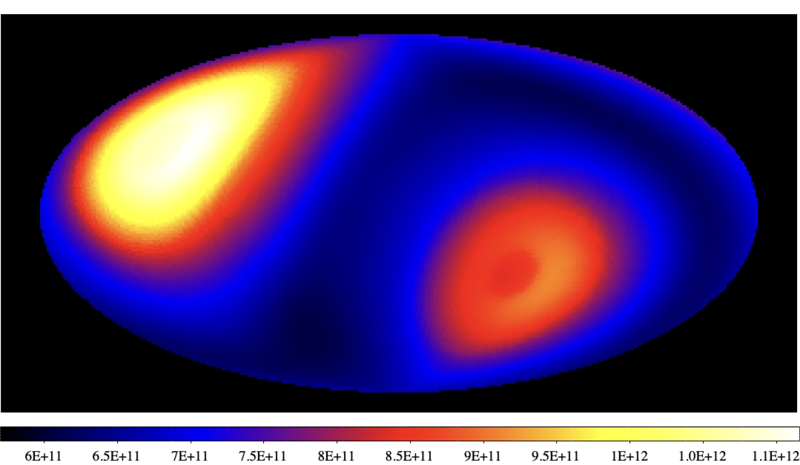
图注：16年观测在50 GeV处的曝光图，采用银河坐标与Hammer–Aitoff投影，曝光单位为平方厘米秒。曝光中位数为1.11×10¹²平方厘米秒。最大曝光位于北天极附近，最小曝光沿天赤道分布。
怎么看这张图：先看天区之间深度差异；这是仪器曝光而非源亮度，选源统计必须考虑这层选择效应。 建立目录空间选择函数的直观依据。
来源与置信度：arXiv HTML；source verified；https://arxiv.org/html/2609.31457v1/figures/exposure_map_v5.jpeg
图11
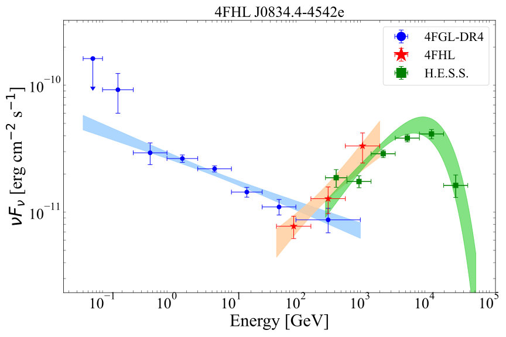
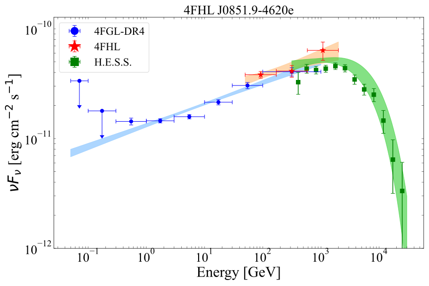
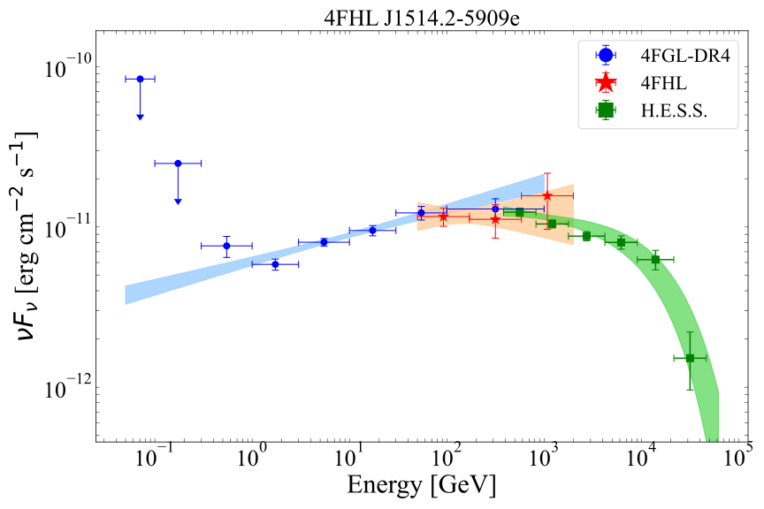
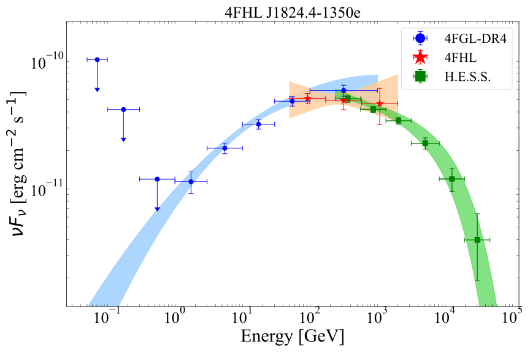
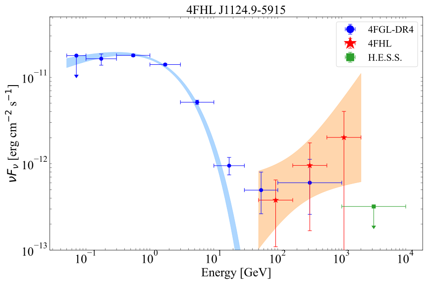
图注：III.3.2讨论的五个银河源的谱能分布：左上为脉冲星风云Vela X，右上为超新星遗迹Vela Junior，中左为MSH 15-52风云，中右为PSR J1826−1334供能的风云。底部面板展示未被H.E.S.S.检出的源，95%上限取自H.E.S.S.合作组文献[81]。蓝点、红星和绿方块分别为4FGL-DR4、4FHL和H.E.S.S.数据。
怎么看这张图：看红星如何填入GeV与TeV之间，而不是把不同仪器数据默认成同时、同一区域的谱；底部上限尤其不能当作通量点。 展示跨能段接续与IACT未检出的边界。
来源与置信度：arXiv HTML；source verified；https://arxiv.org/html/2609.31457v1/SED_HESS_4FHL_J0834.4-4542e.svg；https://arxiv.org/html/2609.31457v1/SED_HESS_4FHL_J0851.9-4620e.svg；https://arxiv.org/html/2609.31457v1/SED_HESS_4FHL_J1514.2-5909e.svg；https://arxiv.org/html/2609.31457v1/SED_HESS_4FHL_J1824.4-1350e.svg；https://arxiv.org/html/2609.31457v1/SED_ULHESS4FHL_J1124.9-5915.svg
图14
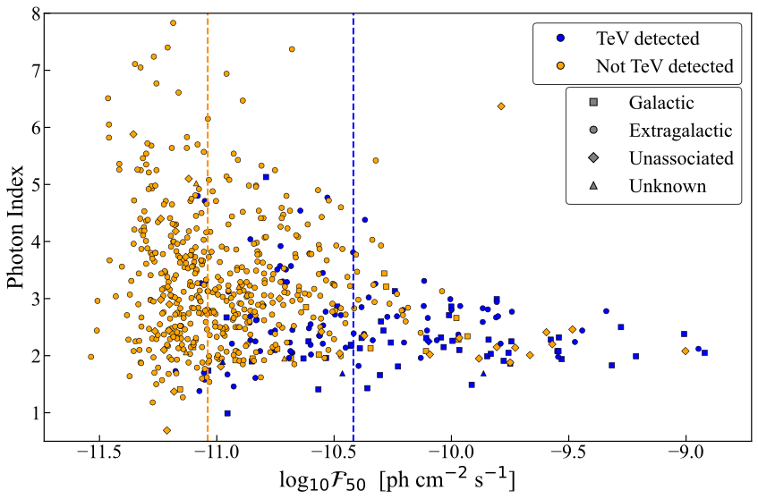
图注：4FHL源的观测光子谱指数随积分光子通量的分布。方块、圆点、菱形和三角形依次表示银河源、河外源、未关联源及类型未知源。蓝色符号为已被IACT检出的源，橙色符号为约占4FHL样本80%、尚未在TeV能段检出的源。彩色竖线表示已检出与未检出两组的通量中位数。
怎么看这张图：蓝橙差别提示亮度选择，但没有包含具体仪器观测时长、扩展源损失或状态变化；这里只能筛候选，不能读出统一的发现阈值。 支持跟进候选选择而明确灵敏度不可直接推断。
来源与置信度：arXiv HTML；source verified；https://arxiv.org/html/2609.31457v1/TeVdetections.svg
强相关工作
本文明确以2FHL为同能段基线，并用3FHL和4FGL-DR4展示能段选择的影响。3FHL从10 GeV起，4FGL又覆盖更低能量，因此源数更多不意味着它们在50 GeV以上一定更深。阅读对应参考文献时应统一能量区间、观测时间和源群，特别不要用全4FGL指数分布来替代4FHL所选的硬子样本。可靠入口为本文参考文献与官方4FGL-DR4资料页。
与H.E.S.S.银河平面巡天的关系是互补覆盖：其范围内63个4FHL源只有39个已有TeV对应体，而一些TeV脉冲星风云在50 GeV仍很暗。原文III.3.3还核对MAGIC、VERITAS、HAWC及LHAASO，避免把一个望远镜的未检出视为全TeV波段未检出。对Vela X、MSH 15-52等同源比较，图11提供光谱接续实例，但能区、扩展和观测期差异意味着机制解释需要回到各项原始测量。对应文献可从本文III.3与参考文献追溯。
同一事件 / 同类源线索：
相似工作：
基础理论 / 方法工作：
相反观点 / 张力线索：
（未提供）
2. Saturation Mechanism of Cosmic Ray Streaming Instabilities with a Shell Distribution
- 来源：arXiv / astro-ph.HE
- 链接：https://arxiv.org/abs/2609.30376
- 作者：Mohamad Shalaby, Rouven Lemmerz, Christoph Pfrommer
- 公告 / 来源日期：2026-09-28
- 阅读层级：重点精读
- 评分：novelty 8/10，importance 8/10，relevance 9/10，final 9.35/10
- 推荐理由：动理学与两种闭合对照定位回旋相位聚束饱和，直接检验宇宙线输运常用假设；仅高CR密度与阿尔芬速度参数域。
中文题目：宇宙线流不稳定性为何停止增长：壳分布模拟中的回旋相位聚束
做了什么：宇宙线沿磁场超阿尔芬漂移时会激发磁波，这些磁波又散射宇宙线；波最终长到多大，决定粒子输运和向环境供能。作者用一维空间、三维速度的全动理学粒子网格模拟，与背景采用理想流体和Landau闭合的两种流体—粒子模拟对照。宇宙线离子在自身静止系中是固定速度、方向各向同性的壳，整体以5倍阿尔芬速度漂移。三种方法都得到约0.25的相对磁扰动饱和幅度，并出现共振粒子相位聚束。
关键证据是完全不含背景Landau阻尼的理想闭合仍复现全动理学结果，说明在本组高宇宙线密度、低等离子体β参数下，非线性Landau阻尼不是控制饱和的必要瓶颈。结论只适用于实际测试域：阿尔芬速度0.01c、宇宙线与背景离子密度比0.01。论文没有直接模拟真实星际介质的极低密度比，也没有给伽马晕的可直接代入扩散系数。
为什么重要：许多大尺度宇宙线流体模型用波增长和阻尼平衡设定散射强度。本文提供一个受控反例：波可以因驱动粒子自身改变相位组织而停止增长，无需等待背景把波能耗散掉。这将“哪个阻尼率最大”的问题扩展为“驱动自由能如何失效”。具体价值是修正闭合模型应检查的物理条件，而不是普遍宣布非线性Landau阻尼不存在。
理论 / 观测 / 仪器方法价值：最可复用的是机制排除的数值设计：保持宇宙线分布和基本参数一致，只改变背景能否产生Landau阻尼，再同时比较波幅、漂移速度、左右旋模态与粒子相位空间。仅一个终态波幅吻合可能是巧合，多项独立诊断一致更有说服力。将盒长增大十倍的理想闭合对照又检验了周期边界尺度依赖，但并非所有物理参数的收敛扫描。
为什么应该关注：对中微子与伽马源周围的宇宙线约束，输运速度决定粒子在靶气体附近停留多久，因此这种饱和机制可能影响辐射效率。值得跟踪的是它在低密度比、宽幂律、外部湍流和多维环境中是否持续存在。当前应把结果存为条件明确的微观机制基准，不能把0.25当作普适磁扰动幅度，更不能据此宣称已解释某个LHAASO源的慢扩散。
展开详细解读：文章讲解、背景、理论、重点章节、图表与相关工作
文章详细讲解
科学问题。 粒子流不稳定性在线性阶段能从漂移中抽取能量，但线性增长率不能回答最终散射有多强。常见解释是波增长与非线性Landau阻尼平衡，波能转成背景热能；另一可能是粒子逐渐被自己激发的波俘获，使驱动电流的相位关系改变。作者要在同一初始条件下区分这两种停止增长的路径。
作者怎么做。 全PIC把背景电子、离子和宇宙线电子、离子都当作粒子，保留动理学阻尼；FPIC保持宇宙线为粒子，背景分别用无耗散理想闭合和近似Landau响应。使用真实质子电子质量比1836、周期边界和五阶插值来控制数值加热，再对小盒与十倍大盒比较。关键不是哪种代码更复杂，而是关闭某物理通道后结果是否改变。
关键结果。 三类模拟的早期增长与理论增长率约0.0314倍离子回旋频率相符，最终磁扰动相对背景场约0.25。粒子漂移先从5降到约4倍阿尔芬速度，再向波系速度下降；相位图显示不同俯仰角粒子分别围绕相应旋向波聚束。理想闭合也出现这一结构，支持共振俘获改变波粒子动量交换、进而限制增长的解释。
局限和下一步。 壳分布没有真实宇宙线宽能谱，计算为1D3V且密度比远高于常见星际值。大盒对照只用理想FPIC，不能称全PIC完成大尺度收敛；正文对全PIC终止时间600与后文各向同性阶段800的叙述也有口径张力，不能声称全PIC独立覆盖所有晚期阶段。下一步应匹配低密度、温度与宽谱参数做统一诊断，找出相位俘获与阻尼竞争的边界。
关键结果是怎么做出来的
先确认输入分布。初始宇宙线壳在粒子自身静止系各向同性，速度尺度13.1倍阿尔芬速度；沿背景磁场施加5倍阿尔芬速度的整体漂移后，背景系中同时存在正向和反向平行速度粒子，但总体有净流。冷宇宙线电子补偿离子电流，背景离子和电子同温。这样建立的不是单一束流，也不是完整的银河宇宙线幂律分布。
再检查增长与数值底噪。背景每种粒子每格7500个，宇宙线每种75个；离子惯性尺度约用428格分辨。小盒实际约5.42个最快增长波长，因此允许的离散波数不正好落在增长率峰值。大盒峰值更接近理论最优波数，早期斜率略有区别属可解释的离散效应；不能只因为增长曲线不完全重合就判定物理机制不同。
第三步把总磁能拆成旋向谱。傅里叶诊断表明主要为向前传播的阿尔芬模，两种旋向由不同共振粒子群在不同阶段驱动。总场看似平滑的增长实际上包含粒子漂移下降和两种极化依次参与。作者据此选择俯仰角区间画相位分布，使“是谁在驱动哪种波”能落到具体的粒子—模态对应，而非只看一个总能量终值。
第四步寻找微观停止机制。原本均匀的回旋相位逐渐围绕波的相位集中；随波幅增大，横向速度与横向磁场产生平行洛伦兹力，改变粒子的平行速度和相对波相位。被俘获粒子围绕平衡相位摆动，驱动波的动量交换可减小甚至反向，对应图2饱和附近波幅振荡。机制推导来自作者此前单模理论，本篇以壳分布的相位诊断延伸验证。
最后做反事实比较。若背景非线性Landau阻尼是控制饱和幅度的主要通道，彻底删去它应让波长得更高；但理想FPIC与全PIC在幅度和阶段演化上接近。Landau闭合的结果只作补充，因为近似闭合本身可能低估阻尼。结论应表述为本参数域中阻尼不控制饱和；它不能单凭曲线吻合证明任意微弱阻尼率严格为零，也不构成全部星际环境的普遍排除。
展开背景、理论、公式、模型和章节导读
背景知识
带电宇宙线不能像伽马光子那样直线传播。它们绕磁场回旋，并被不同尺度的磁扰动改变运动方向；长期看呈现扩散和沿场漂移。散射强度影响粒子是否留在源周围、能否驱动外流，以及能量最终进入辐射还是介质加热。这就是一个等离子体微观饱和问题为何会进入星系尺度模型。
阿尔芬波可以看作磁力线张力与等离子体惯性共同维持的横向扰动，其相速度由背景磁场和质量密度决定。当宇宙线相对于介质的净漂移足够快时，特定粒子能够持续与波保持相位关系，从漂移自由能中驱动波增长。增长的波反过来散射粒子，构成自限流的反馈，不能把波幅视为永远固定的外部输入。
非线性Landau阻尼涉及不同波形成拍频扰动，并把能量通过共振交给背景粒子。它与宇宙线被波俘获并不是同一过程：前者侧重波能耗散到热背景，后者侧重驱动群体的相位和电流如何改变。两者都可能让波停止增长，仅测终态幅度无法唯一判断，必须用有无阻尼的对照及相位空间证据。
俯仰角描述速度相对磁场的倾斜，回旋相位描述绕磁场转到哪一个方位；二者不能混为一谈。粒子在波静止系中趋向各向同性，仍可在实验室系保持阿尔芬速度的平均流。本文的相位聚束是局部共振群体的有组织演化，并非所有粒子永远锁在同一相位；最终分布与中间阶段的聚束图需分开读。
基础理论 / 方法脉络
壳分布把粒子动量模长固定，仅保留方向分布，降低宽能谱带来的尺度分离成本。它可以近似数目由最低动量附近主导的极陡谱的一部分驱动物理，但不等价于通常有限斜率的幂律。高能粒子贡献的长波、不同能量群的耦合和宽谱输运不能从此自动推出，这是后续用于伽马源环境时必须保留的边界。
共振要求粒子沿场运动看到的波频率与自身回旋频率匹配。在给定速度和俯仰角下，这选定相应波数；改变俯仰角就改变参与的尺度与旋向。因此作者不是用一条总增长曲线解释全部粒子，而是分旋向看模态，再在极端正、负俯仰角区间追踪回旋相位。这把宏观增长与微观动量交换连接起来。
相位俘获可用摆方程理解：粒子相对波相位的变化率受共振失谐控制，平行洛伦兹力又随相位改变平行速度，两者形成反馈。小扰动时粒子不断滑过波相位并持续驱动；波足够大后，有些粒子进入围绕平衡相位的摆动，时间平均驱动减弱。本文未给一条适用于任意分布的统一饱和幅度公式，0.25是本组模拟的结果。
理想背景流体仍能响应电磁力并与粒子交换动量，却没有Landau耗散通道，因此其与全PIC一致是机制判别的关键。Landau闭合通过近似背景动理学响应增强物理内容，但其准确性需单独验证。能量误差小保障数值加热不是显而易见的替代解释，却不能替代多维、不同密度比和β的物理扫描；这些属于不同层面的可信度检查。
公式与推导
先用原文定义把计算单位建立起来：
B0是均匀背景磁场，ni和mi为背景离子数密度与质量；这里采用SI形式。时间用离子回旋频率的倒数、速度用阿尔芬速度衡量，才能比较不同算法而不混淆单位。
输入参数决定自由能规模与热背景状态：
β是热压与磁压的相关无量纲参数，沿用原文温度约定。增强α与vA降低计算成本，却同时限定了适用域；低离子热速并不意味着电子也无共振响应，原文电子热速约4.2vA。
原文式(1)给最快线性增长率：
代入密度比与漂移即可得到所画参考斜率。这是早期线性诊断，磁场幅度与磁能的指数增长率需按所画量区分；不能把它当作进入强非线性后的固定增长率。
相应最快尺度由原文壳参数估计：
离子惯性尺度di=c/ωpi，v0=13.1vA。右式是周期边界的教学解释：小盒L约583di时最快允许模为n=6，波数略偏离连续理论峰；大盒L约5830di更接近理论最优模。这解释增长差异，同时检验饱和是否随盒长改变。
原文式(4)的共振条件可重写为：
μ是背景系俯仰角余弦，γcr是粒子洛伦兹因子。它将一个粒子群的速度投影与参与的波数联系起来；旋向符号取决于作者使用的傅里叶与回旋约定，不能脱离该约定比较左右旋符号。
用于数值分解的原文式(3)为：
两种求和范围分别提取右、左旋贡献，傅里叶归一化沿用模拟输出。它解释图4为何能将漂移减速与两个波族的先后增长对应，而不是把总能量平台当作单一模态已经停止。
最后给出原文文字机制的教学示意，系数并非本文拟合结果：
φ为粒子相对波的回旋相位，ωtr为在单模、局部近似下的俘获频率。横向速度与扰动场的叉乘改变平行速度，平行速度再改变共振失谐，于是出现摆动而非无界滑移。此示意帮助理解相位聚束和动量交换反向，不能拿一个未校准的ωtr推算真实星际扩散常数。
模型拟合 / 应用方法
本文没有对天文观测做参数拟合，而是在固定物理输入下做数值机制检验。初始场沿x方向，空间均匀的四类粒子或流体共同建立电荷与电流平衡，使用真实质量比和相同的宇宙线宏粒子数。要复现结果，首先需保存这些输入和各算法的闭合选择，而不是从最终波幅倒推出一个经验阻尼率。
线性验证比较的是理论最快模与盒内允许模。小盒约5.42波长，大盒约54.2波长，文中5和50的标签是简写；图6另写约6000离子惯性尺度，也属于近似表达。报告应以583与5830的实际盒长为定量输入，避免把标签直接用于波数推算。动力学时间比较还需明确幅度或能量的增长定义。
非线性验证同时看总波幅、左右旋谱、平均漂移和条件相位分布。图5与图6的相位聚束支持局部俘获，图7在tΩi=600展示向波系靠拢的分布。正文提到最终各向同性在约800之后，却在数值误差段称全PIC运行结束于600，因此本解读不把两者无条件合并为全PIC完整晚期验证；需要原始时序或作者澄清才能消除这一文本不一致。
系统边界比拟合误差更重要。小盒PIC总能量变化约初始总能量的10的负4次方百分比，换算约初始宇宙线离子动能的0.011%，说明数值误差小于驱动能库；但它不是饱和幅度的统计置信区间。缺少更低α、多维和外湍流扫描时，应把0.25作为该设定的基准值，后续先测稳健性再把结果嵌入大尺度输运闭合。
重点章节 / 结果段落怎么读
- II先读壳分布、漂移、α与β，并核对小盒实际长度，理解数值可行性换来了哪些物理限制。
- III.1与图2比较全PIC、理想FPIC和Landau闭合；先分辨早期增长和饱和，再问哪个通道被关闭。
- III.2—III.3沿共振条件、旋向谱到相位聚束阅读，重点看何种俯仰角粒子与何种波相互作用。
- III.4与图7只对齐相同时间的相位空间；对600与800的晚期叙述保留文本边界。
- III.5与IV比较不同既有模型的参数域，最后读V明确作者将真实星际参数外推留给未来。
关键图表与解读
图2
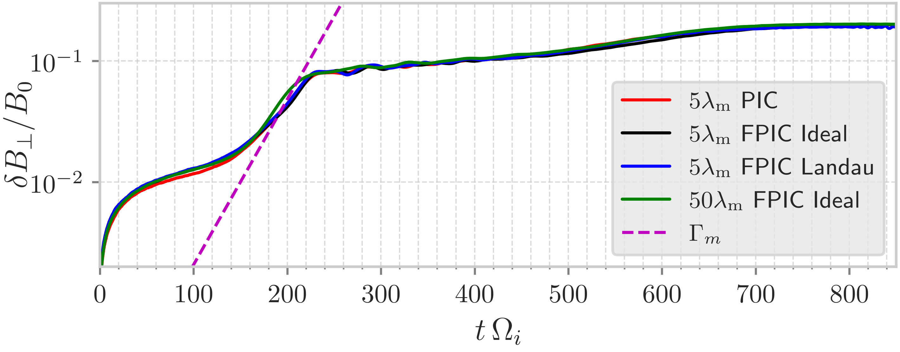
图注：不同模拟中的磁场能量增长。粉红虚线标出最快增长的向前阿尔芬波模的线性增长率预测Γm=0.0314Ωi，与所有模拟的早期总磁能增长很好一致。各模拟最终在δB/B0约0.25处饱和。标为5λm的曲线对应约五个最快增长波长的计算域；绿色曲线为采用理想闭合、计算域延伸到约50λm的FPIC模拟。全PIC与两种闭合FPIC的接近一致表明，在本文参数下非线性Landau阻尼不起控制作用。
怎么看这张图：同时看早期斜率与饱和平台，实际盒长为5.42和54.2个波长。图注沿用作者的机制表述，解读限定为不控制饱和，不推断所有环境阻尼严格为零。 有无阻尼及盒长对照是核心证据。
来源与置信度：arXiv HTML；source verified；https://arxiv.org/html/2609.30376v1/Figures/Figure02.png
图7
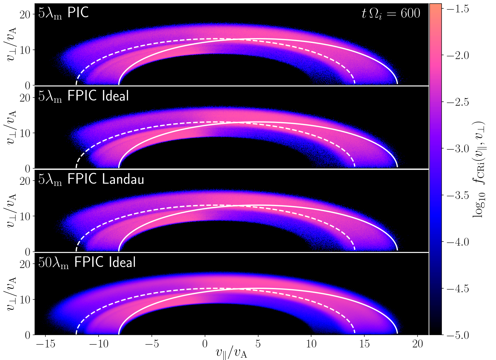
图注：各模拟在tΩi=600、已进入非线性阶段时的宇宙线离子相位空间分布。白色实线表示初始分布，白色虚线表示将初始分布平移到局部阿尔芬参考系后的结果。分布向阿尔芬系移动，说明宇宙线正趋向在波的参考系中各向同性。
怎么看这张图：比较同一时刻各算法的分布和两条白线；正在趋向各向同性不等于此时已经完成。不要把后文约800的终态无条件归给这里600时的全PIC图。 独立核对波幅以外的粒子响应与时间边界。
来源与置信度：arXiv HTML；source verified；https://arxiv.org/html/2609.30376v1/Figures/Figure07.png
强相关工作
前期单模增长与饱和理论已经讨论回旋相位俘获，本篇增加的是较复杂壳分布及有无背景阻尼的受控比较，不能把机制本身全部算作本篇首次提出。Bai等的MHD-PIC研究强调准线性演化和周期边界相位随机化；本文认为后者可能抑制局部聚束。二者输入分布与参数不同，不能用本篇单组实验否定所有旧模拟。
Thomas与Pfrommer的阿尔芬波调控输运模型提供大尺度两矩框架，而Schroer等关于非线性Landau阻尼的研究给出不同饱和解释。本文的实质张力是哪个通道在特定环境控制散射，解决它需要匹配参数、数值噪声和边界条件。文内另一篇2026年FPIC对照缺全PIC基准，因此这里只记录为支持线索，未把尚未独立阅读全文的工作升级为同等验证。
同一事件 / 同类源线索：
相似工作：
（未提供）
基础理论 / 方法工作：
相反观点 / 张力线索：
3. Spectral and Polarization Properties of Coherent Radio Emission from Relativistic Magnetized Pair Plasma Shocks
- 来源：arXiv / astro-ph.HE
- 链接：https://arxiv.org/abs/2609.30494
- 作者：Yuanhong Qu, Joonas Nättilä, Lorenzo Sironi
- 公告 / 来源日期：2026-09-28
- 阅读层级：重点精读
- 评分：novelty 8/10，importance 8/10，relevance 8/10，final 9.00/10
- 推荐理由：三维PIC建立视线角、模态和球壳积分谱偏振对应，提供可检验FRB辐射判据；固定洛伦兹因子且无冷却。
中文题目：激波同步辐射脉泽的谱宽与偏振：三维模拟如何检验FRB辐射机制
做了什么：作者针对磁星磁层外激波产生快速射电暴的模型，计算谱宽、线偏振、圆偏振和偏振角能否同时符合观测。三维粒子网格模拟采用冷电子正电子上游、洛伦兹因子10、垂直磁场和磁化度3或6。研究不再只看正对激波的辐射，而是把模拟电场投影到不同视线，再变换到观测系，对球面激波各局部面元的Stokes参数做非相干叠加。
高斯包络相对带宽在磁化度3时由单面元的0.41增至整体0.57，在磁化度6时由0.74增至0.82。谱峰仍由X模主导，保持高线偏振和近乎平坦的偏振角；高频较暗部分的O模增强，可带来圆偏振。这些条件结果与部分非重复FRB相容，但不能自然同时解释某些重复源的极窄谱、强圆偏振和偏振角突变。
为什么重要：只用“能产生高线偏振”支持某个FRB模型，约束通常很弱。本文把同一模拟输出的频谱和偏振联合起来：若仪器只看到最亮窄尖峰，确实能得到约0.05—0.06的表观带宽，但它应更受X模支配，仍近乎纯线偏振。因此用灵敏度选择解释窄谱，会同时带来可检验的偏振要求，不能单独调一个观测特征而忽略另一个。
理论 / 观测 / 仪器方法价值：可借鉴的技术链是从三维电磁场提取任意方向模态、先平均Stokes量再求偏振度，以及区分局部辐射、本征谱包络和球面几何展宽。它避免直接平均偏振度产生偏差，也提醒模拟比较观测时要采用相同带宽定义。不过本文没有把真实望远镜频率响应、噪声与触发条件完整注入，峰值阈值法只是灵敏度受限情景的示意。
为什么应该关注：对磁星高能活动与FRB的机制研究，这一结果提供了“辐射位置—等离子体模态—偏振联合特征”的条件预测。值得关注的是更高洛伦兹因子、辐射反作用和非球面激波是否改变该结论；当前计算固定γ0=10且忽略冷却，不能直接外推到极端相对论激波或据此排除所有磁层外FRB模型。它也没有预测对应的伽马或中微子探测显著性。
展开详细解读：文章讲解、背景、理论、重点章节、图表与相关工作
文章详细讲解
科学问题。 磁层外模型中的相对论激波可以产生相干前驱电磁波，但从局部波到遥远观测者接收的暴发，中间还隔着视角、相对论变换和整个激波面的叠加。观测上有的FRB高度线偏振，有的出现圆偏振或偏振角变化，谱宽又各不相同。作者要检验同一物理设定是否能给出这些量的联合关系，而非只证明激波能发射射电。
作者怎么做。 在下游静止系用反射壁形成平面垂直激波，记录激波前方的一小块稳定前驱区。把电场做傅里叶变换后，沿任意视线投影为两个横向正交分量，计算X、O模和Stokes参数。再把每个局部平面片对应到球面的一部分，逐片做洛伦兹变换和公共天空基底投影，最后相加Stokes量，而不是将远处分离区域的电场当作彼此相干。
关键结果。 轴上谱峰由X模主导；离轴时O模相对增强，但总体功率下降。通过人为去掉电场不同分量的诊断，作者发现O模主要与沿背景磁场的电流有关，不能只用视线投影产生的法向电流解释。对41个准稳态快照先平均Stokes量后，峰附近高线偏振和近乎恒定的偏振角仍在，说明不是一个特殊时刻的偶然输出。
局限和下一步。 球面叠加假定辐射锥范围内的激波平滑、局部磁场几何一致；曲面起伏、小尺度上游扰动和传播转换没有在此完整处理。几何单色近似在高磁化度给出更窄的展宽，但真实PIC局部谱本身变宽，所以不能声称磁化越强，最终观测谱一定越窄。下一步应扫描参数并加入仪器选择和传播过程，检验同时满足谱宽、线圆偏振与偏振角的区域。
关键结果是怎么做出来的
第一步检查模拟与取样。上游是冷对等离子体，γ0=10，温度以电子静能归一化为10的负4次方；惯性尺度分辨25格，横向盒宽5.12个惯性尺度，每格每种粒子2个。场求解和电流滤波用于抑制数值切伦科夫噪声。本文实际详细比较磁化度3和6；这些数值保证本次受控实验可解释，但不是针对全部磁化度、粒子数或横向盒长的完整收敛研究。
第二步确定使用的是稳定前驱波。电场取自激波前方5至35个惯性尺度的薄层，非周期的x方向加Hamming窗，并限制无量纲波数至少1，减少有限窗口低频影响。图3把1500至2300个等离子体频率倒数的区间作为准稳态；41个快照给出时间平均与波动范围。图中的16%和84%分位代表时间变化，不能称为天文测量的参数误差。
第三步把视角与模态区分开。文中的视角是相对于背景磁场定义，所以90度才是沿激波法线的轴上视角；它不是通常“轴上等于零”的那个角。轴上X模占优，较小视角处O模相对增强。去掉Ez使X模在各角度都占优，去掉Ex变化较小，支持沿磁场电流为O模主要来源的诊断。
第四步从单片走到球面。不同面元到观测者的路径差远大于射电波长，故应非相干地加Stokes量。每片仍需先变换电磁场、用同一观测频率网格并投到公共天空基底。先加各面元偏振度或直接平均偏振角都会丢失Q、U的方向信息，无法正确描述退偏振；本文以这种顺序得到峰附近仍以线偏振为主的整体辐射。
第五步明确带宽口径。附录C以高斯拟合整个谱包络，得到单片0.41/0.74和整面0.57/0.82；另一口径只看最亮部分的半峰频率跨度，得到约0.06/0.05。二者回答“完整辐射有多宽”和“只看到亮峰时有多宽”，不能互相替换。解析单色谱部分还采用两倍单侧半峰距离的宽度约定，它与数值高斯FWHM不完全相同，比较时保留定义差别。
展开背景、理论、公式、模型和章节导读
背景知识
FRB是毫秒量级的相干射电瞬变，其亮温要求大量电荷辐射之间存在组织关系。磁星为许多模型提供能源，但能源来自磁星不等于辐射一定在磁层内产生：爆发外流与周围介质相遇形成激波，也可能在磁层之外产生相干辐射。辐射位置需用时间、谱、偏振及传播环境共同约束。
同步辐射脉泽这个名称在本文沿用惯例，作者脚注提醒其详细机制不一定符合最初提出的粒子数反转图景。在强磁化垂直激波中，粒子有组织的回旋和电流能激发向上游传播的前驱电磁波。普通非相干同步辐射的连续谱直觉不能直接套用在这些模态和窄谱子结构上。
线偏振刻画电场主要沿哪条直线振动，圆偏振需要两个横向分量有合适幅度和相位差。仅一个占主导的正交模态通常有利于高线偏振，两个模态接近时才可能有较强圆偏振。传播也能改变偏振，因此模拟的发射端预测与地面测量并不等同；本文重点计算前者及几何叠加。
球面相对论流体的不同纬度有不同多普勒因子和路径长度，观测者看到的并不是一块正对自己的平面片。局部单色波也会因几何得到有限频谱，而局部本已很宽的谱还会额外展开。不同区域不相干时，Q和U可以相互抵消，使整体偏振低于每片；这说明“单片100%偏振”本身不是观测模型的充分成功证据。
基础理论 / 方法脉络
磁化度σ比较上游坡印廷能流与粒子动能通量，在冷电子正电子垂直激波中也等于回旋频率与等离子体频率平方比。本文两种频率使用含上游整体洛伦兹因子的模拟系定义，符号与上游静止系互相对应。带量纲的GHz预测还需要指定密度和观测系变换，不能从无量纲谱图直接读出某个源的中心频率。
强磁化区中，谱峰附近X、O模折射率都接近1，作者据此把模拟中的波数谱与频率谱对应。这是有限参数近似，不是所有低频等离子体波都在真空中传播。取样区也只接收到能跑在激波前面的波，未能进入该区的辐射是否耗散、是否会在激波减速后逃逸，作者明确留作未决问题。
Stokes量是复电场两个正交分量的二次组合，含幅度也含相位。某单片单时刻单频率由一组确定复振幅构造时，总偏振度为1是数学定义的结果；把多个快照或面元叠加后不再必然为1。先平均Stokes量再计算偏振度，才能让统计混合造成的退偏振真实出现。
几何展宽的解析推导另作单色、恒洛伦兹因子和恒发射强度假设。强磁化缩小可逃逸辐射锥，于是不同面元的多普勒因子变化减小，这部分展宽随σ增加而减弱。但模拟局部谱宽可能随σ增加而增大，两个因素方向相反；本篇σ=6整体包络比σ=3更宽，正说明不能把局部与几何贡献混为一谈。
公式与推导
以下按原文式(1)、(4)—(15)、(20)、(26)及附录C整理，从输入参数到可观测量；没有另行拟合论文未报告的参数。
磁化度与峰值尺度首先建立联系：
n0是正负电子总数密度，γ0=10，ξ约3是文中引用的一维模拟尺度估计。B0、n0与频率必须使用相同参考系定义；它提供尺度参照，不是本篇对所有角度重新得到的精确峰位公式。
强磁化时，原文两种模态满足：
这里n为折射率而非数密度。两者接近1时可用ω约等于ck把空间傅里叶谱转换成频率谱，后续视角取样因此有清楚物理前提。
令视线位于x—z平面，文中投影简化为：
第一分量为X模，第二为O模；θv相对于背景场z轴，90度为沿激波法线。改变角度不仅改变看到的波矢，还改变电场投影，所以不能简单复制轴上谱。
用这两个复数分量构建Stokes量：
省略波浪号以简化记号，圆偏振V的正负沿原文基底约定。只有O模功率增加还不足确定V，两个分量的相对相位同样参与。
最后才由Stokes量求偏振：
这里用atan2明确象限，是对原文arctan写法的数值实现说明。对于41个快照，应先求各Stokes量的平均，再代入此式；直接平均Π或PA一般不等价。
各面元转换到同一观测频率与天空基底后，路径差远大于波长时满足：
这是原文式(20)的非相干叠加。电场相干相加仅适用于路径差保持波相位的极小区域；文中估计其角尺度约10的负5次方弧度，小于主要辐射锥。
附录C的数值谱包络定义为：
sν为拟合高斯标准差，避免与磁化度σ混用。这一W_G给出0.57和0.82；它不是最亮尖峰单独的宽度，也没有作者未报告的参数置信区间。
单色几何模型以多普勒因子连接角度与频率：
右式来自θmax=A/(Γ√σ)、Γ远大于1和小角近似，A为量级1的角度系数。原文以两倍单侧半峰距离定义该非对称谱的宽度，高σ时约2A²/σ；这与前一高斯包络FWHM定义不同，解读不把两者当作严格同一量。它只说明几何贡献随σ减小，不能覆盖PIC本征宽度。
模型拟合 / 应用方法
本篇“拟合”主要是数值谱包络表征，并非对一组FRB数据做完整统计模型选择。输入固定γ0与磁场几何，比较σ=3和6，先选准稳态区间，再得到各角度和整面谱。实际计算要保存时间窗、傅里叶窗、取样位置与归一化方式；改变这些步骤可能改变低波数谱，不能将某一条快照曲线当成唯一预测。
高斯包络拟合只提取中心频率、标准差和振幅，目的是与常见观测带宽定义对齐。它有意不拟合每个窄尖峰，文中也未报告高斯残差统计、参数后验或σ之间差异的显著性。因而0.57和0.82是给定模拟与表征方式下的近似数值，不应附加论文未提供的误差条或声称它们精确测量了真实源磁化度。
时间平均与曲面积分属于另一类系统处理。先对41帧的Stokes量平均，再求偏振；各面元需共同观测基底和频率网格。单片总偏振为1的构造性质与叠加后的偏振保持必须分开。本文用41帧与模态分量删除做了稳定性检查，但没有全面给出网格、横向尺寸和每格粒子数变化的误差预算。
面向观测还要处理仪器频段截断、噪声、传播旋转和探测阈值。附录C的亮峰半高跨度能说明阈值可能选择窄谱，但不是实际接收机响应前向模拟，也不等于拟合出某类重复FRB。严格检验应在同一次暴发上联合比较谱包络、亮峰宽度、线圆偏振和PA，若只有窄峰被检出却同时出现强圆偏振或PA突变，就对当前简单几何形成更具体的张力。
重点章节 / 结果段落怎么读
- II与图1先建立参考系和θv定义：轴上是90度，并核对γ0固定、无冷却和横向盒宽。
- III—IV.1从近真空色散到任意视线投影，读Ez/Ex删除实验，理解O模来源。
- IV.2—IV.3区分单片纯偏振的定义性质与41帧Stokes平均后的物理保持。
- V及附录B沿逐片变换、公共基底和非相干叠加阅读，避免直接把电场或偏振角相加。
- VI与附录C连读，明确单色几何宽度、高斯包络和亮峰带宽三种口径，再评价与FRB的相容范围。
关键图表与解读
图7
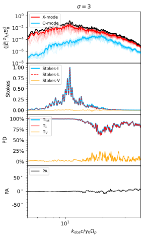
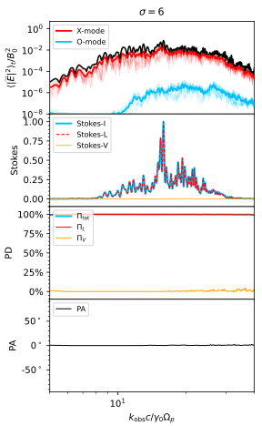
图注：观测者参考系中，对视角积分后的频谱、Stokes参数、偏振度PD和偏振角PA随k_obs c/(γ0 Ωp)的变化，分别对应磁化度σ=3和σ=6。上方面板的浅色曲线为1500≤Ωp t≤2300内各快照，粗红线和粗蓝线分别为该时段X模与O模的时间平均谱。黑线是在该时段内每个波数处X、O模总功率的最大值。先对Stokes参数做时间平均，再计算偏振度与偏振角。
怎么看这张图：峰附近X模优势对应高线偏振和平坦PA；高频圆偏振增强处辐射更暗。黑线不是平均谱，不能和粗红蓝线相加比较。 检验整体谱与偏振联合预测。
来源与置信度：arXiv HTML；source verified；https://arxiv.org/html/2609.30494v1/sigma3_allangle_timeavg.svg；https://arxiv.org/html/2609.30494v1/sigma6_allangle_timeavg.svg
图8
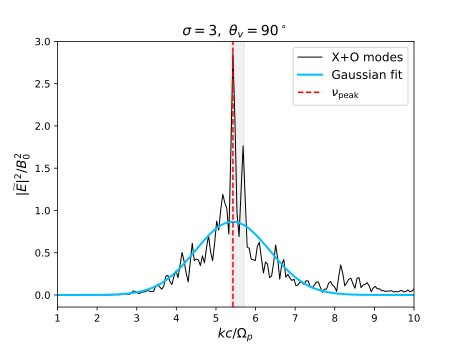
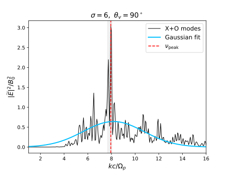
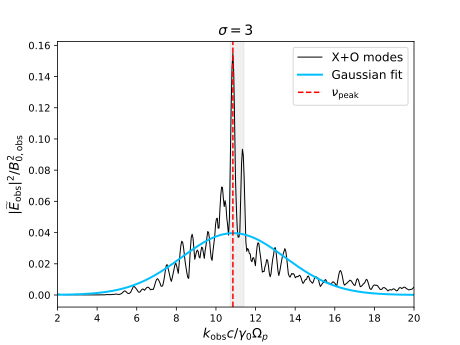
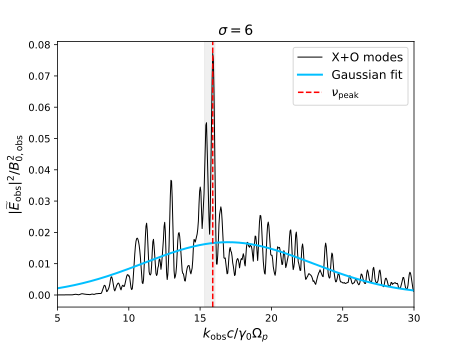
图注：单个激波面元和视角积分后频谱的带宽比较。上排为θv=90°的单面元谱，下排为对应的视角积分谱；左列σ=3，右列σ=6。黑线是X模与O模合计的谱功率，蓝线是宽谱包络的高斯拟合。红色虚线标出峰值频率，灰色区域为另一种灵敏度受限估计所用的高流量谱区间。
怎么看这张图：蓝色包络给0.57/0.82的整体带宽，灰区给约0.06/0.05的亮峰宽度；不同口径不可互换，阈值选择还同时要求高线偏振。 直接核验两种数值带宽与观测选择的区别。
来源与置信度：arXiv HTML；source verified；https://arxiv.org/html/2609.30494v1/sig3_90.svg；https://arxiv.org/html/2609.30494v1/sig6_90.svg；https://arxiv.org/html/2609.30494v1/sig3.svg；https://arxiv.org/html/2609.30494v1/sig6.svg
强相关工作
本文在引言中引用磁星SGR 1935+2154与FRB 20200428的联合观测作为中心引擎背景，但这不决定具体辐射地点。此前磁化激波PIC研究多集中于沿法线视角，本篇新增任意视线投影、时间平均和球面叠加，从而能对谱宽与偏振的关联给出更完整预测。具体基础工作可从原文引言与参考文献追溯，不能把磁星起源证据直接等同于本模型获验证。
与高纬单色展宽估计的关系尤其关键。旧解析图像在特定半峰约定下得到约0.58，本文引入磁化限制的发射锥后指出高σ时几何贡献会减弱；PIC局部谱却并非单色，所以整体0.82并不反驳这一趋势。观测上重复与非重复样本的谱宽差别提供比较动机，但受望远镜频带与样本选择影响。本文结论是与部分非重复暴发相容，并给重复源的联合偏振特征留下张力，未给出两类源必然采用不同机制的证据。
同一事件 / 同类源线索：
相似工作：
（未提供）
基础理论 / 方法工作：
相反观点 / 张力线索：
（未提供）
相关简报
1. Convolutional non-parametric Gamma-Ray Signal and Background Separation
- 来源：arXiv / astro-ph.HE
- 链接：https://arxiv.org/abs/2609.30917
- 作者：Scarlet Betterman, Emmanuel Moulin, Martin White
- 公告 / 来源日期：2026-09-28
- 阅读层级：相关简报
- 评分：novelty 7/10，importance 7/10，relevance 10/10，final 9.05/10
- 推荐理由：全文降为相关简报：双头VAE与多源重建有方法增量，但真实HESS测试训练模板来自同一目标观测；暗物质仅固定质量通道；68%为10模型间离散而非覆盖率。低SB空间误差超过50%，多处SB图文不一致，尚不足显著推进的精读门槛。
中文题目：卷积自编码器分离伽马信号与背景：有潜力，但训练先验和误差仍需检验
问题、方法与结论：针对IACT计数立方体中的残余宇宙线背景，作者训练双头卷积变分自编码器，分别输出去噪的信号与背景形状，再迭代最小二乘恢复两者幅度。十个独立初始化模型组成集成，测试包括高斯多源玩具、银河中心暗物质模拟及H.E.S.S.公开Crab、MSH 15-52观测。真实数据的信号能谱相对差异分别为7.46%与10.12%，但参照是传统Multiple OFF提取结果，不是已知真值；空间参照采用环背景法。
意义与贡献：方法可以容纳未知数量、相互重叠的源，并将谱与空间信息联合用于背景分离，适合做后续分析工具的对照。全文证据支持特定训练分布内的重建能力，尚不足证明对全新天区普遍适用：真实源训练模板来自对应目标的观测，排除原始测试实现并未消除模板共享。
可借鉴之处：可借鉴双输出头、分离形状与幅度、十模型集成和逐方向误差检查。用于LACT时，应以独立天区、不同天顶角和响应条件构建训练测试划分，并注入源测量偏差、覆盖率和误报率；论文没有完成这些迁移检验。KL与稀疏惩罚在本文训练均设为零，不能将潜在功能写成已验证优势。
局限与关注点：低信背景比案例整体误差约4.2%，但信号空间投影误差约52%—56%，背景主导的总误差会掩盖弱源失败。68%带表示十模型输出的离散，未校准为数据置信区间。正文与图注的SB数值不同（低SB为0.1/0.17，多源为0.7/0.028）；还存在图5“三源”与四个参数组矛盾，不能据此宣称确定的灵敏度阈值。
图8
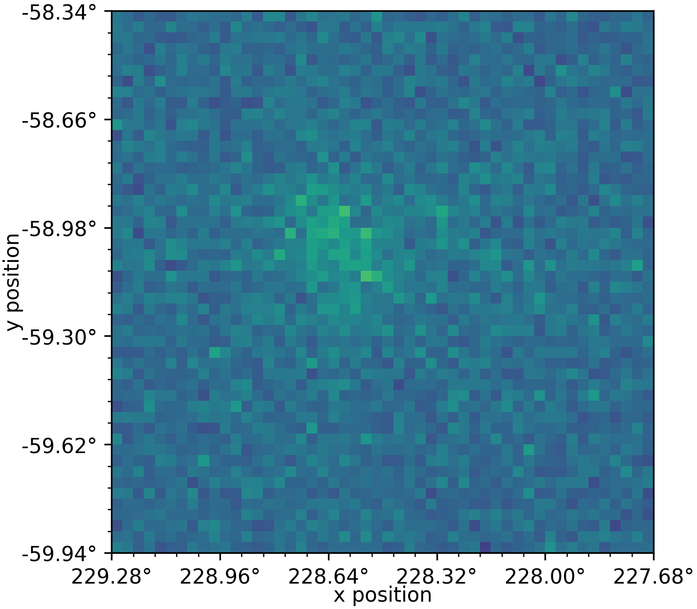
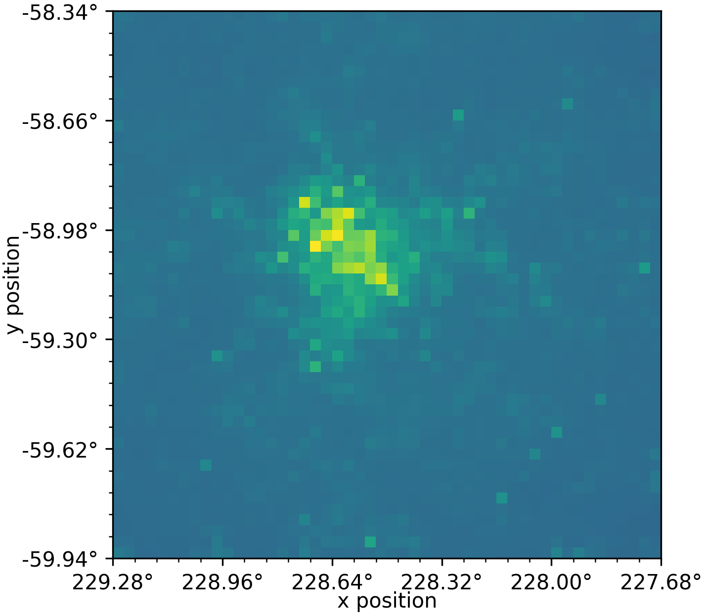
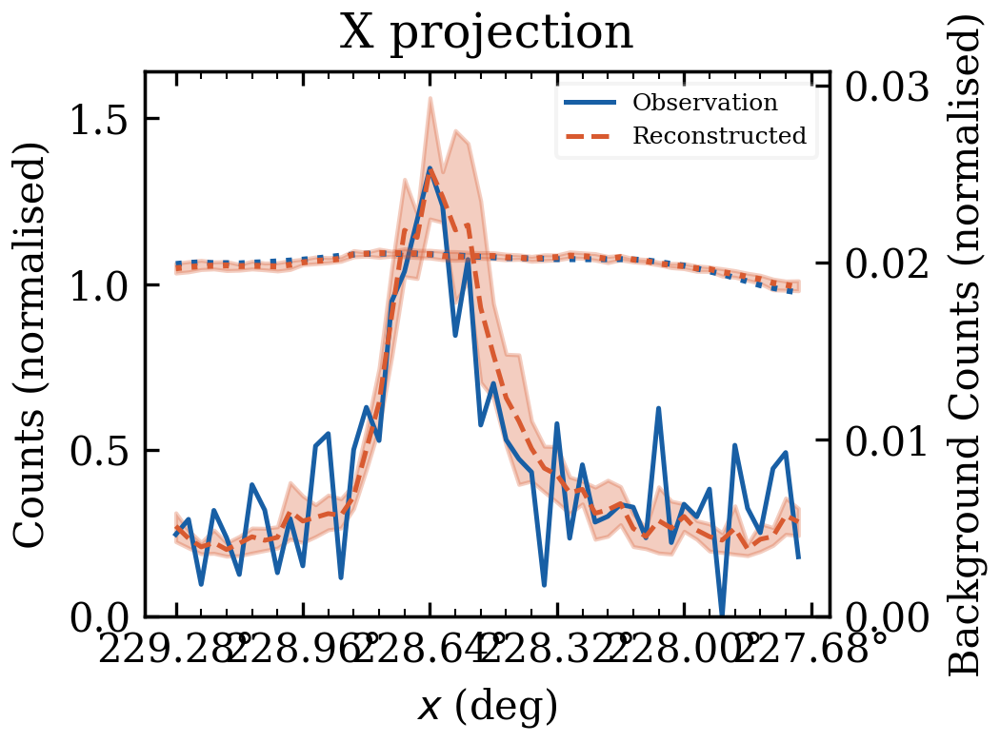
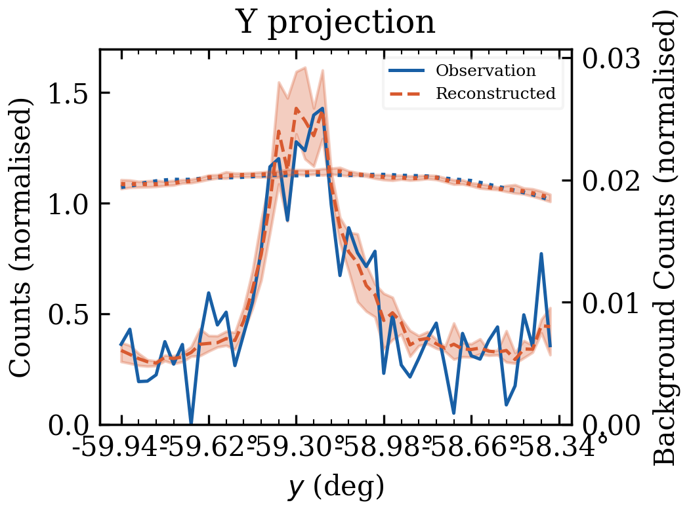
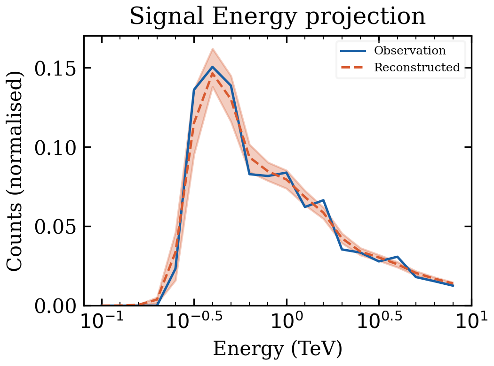
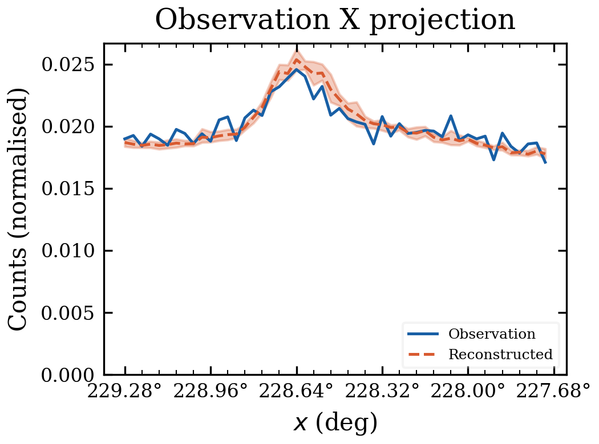
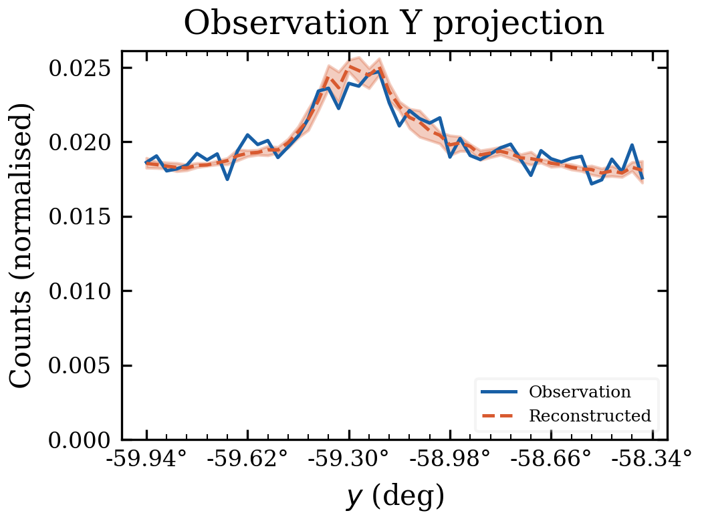
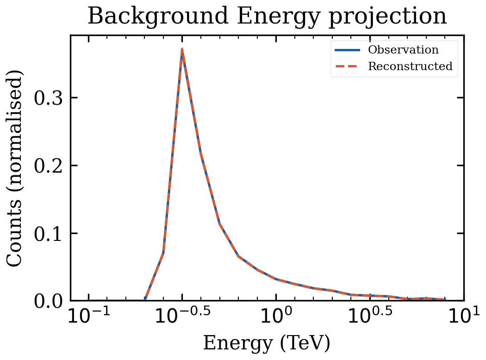
图注：对MSH 15-52观测数据，比较十次模型运行组成的集成神经网络输出。中部和底部面板中的带状区域包含68%的模型输出。
怎么看这张图：上排比较空间图，中下排检查空间投影和信号、背景能谱。带宽反映模型间离散；传统提取的参照不是真值，同目标模板训练也限制独立泛化结论。 直接检查真实扩展源的重建与集成离散。
来源与置信度：arXiv HTML；source verified；https://arxiv.org/html/2609.30917v1/plots/MSH/subplot_0_0.png；https://arxiv.org/html/2609.30917v1/plots/MSH/subplot_1_0.png；https://arxiv.org/html/2609.30917v1/plots/MSH/sig_back_x.png；https://arxiv.org/html/2609.30917v1/plots/MSH/sig_back_y.png；https://arxiv.org/html/2609.30917v1/plots/MSH/sig_energy.png；https://arxiv.org/html/2609.30917v1/plots/MSH/obs_x.png；https://arxiv.org/html/2609.30917v1/plots/MSH/obs_y.png；https://arxiv.org/html/2609.30917v1/plots/MSH/background_energy.png
2. A tidal disruption event in a quasar at redshift 7.19
- 来源：arXiv / astro-ph.HE
- 链接：https://arxiv.org/abs/2609.30441
- 作者：S. Fujimoto, Q. Fei, G. B. Brammer, K. Inayoshi, V. Kokorev, L. C. Ho, R. Li, F. Walter
- 公告 / 来源日期：2026-09-28
- 阅读层级：相关简报
- 评分：novelty 7/10，importance 8/10，relevance 8/10，final 8.70/10
- 推荐理由：全文降为简报：z7.19多年多波段变暗观测重要，但TDE仍为解释，MIRI仅单历元三点而非测得回声滞后。4.1仅拟合t_rest>200d却报t_peak=87d与高斯上升宽度33±7d，该分段下上升宽度不进入所述拟合数据，识别性存在文本矛盾；不足支持摘要级强归因。
中文题目：红移7.19类星体GNz7q的长时标核瞬变：TDE解释仍待确认
问题、方法与结论：作者汇集HST、Spitzer、Subaru及JWST两十余年成像，确认GNz7q在2012年后呈跨波段平滑变暗，静止系约两年紫外振幅约1.1星等；四个邻近源采用相同测光没有类似变化。稳态AGN/宿主加温度演化热瞬变模型可描述数据，固定晚期衰减指数−5/3，得到未消光修正峰值总光度约3.5×10⁴⁵ erg/s、辐射能约(1—2)×10⁵³ erg。两历元光谱都有红移约2500 km/s、宽约11900 km/s的Balmer分量，但相隔44静止系天无显著变化。
意义与贡献：这是再电离时期黑洞核区大幅供能变化的有价值观测，TDE是可行解释而非已唯一确认的身份。单历元三个MIRI测量可与约1485 K尘埃再处理相容；0.46 pc依赖升华半径等附加假设，文中0.3—0.5 pc也能得到近似可接受拟合，尚未直接测得红外时延。
可借鉴之处：可借鉴跨仪器统一测光、邻近控制源、多波段共享瞬变加基线、再处理卷积的联合核查。20万次阻尼随机游走模拟给约10⁻⁵的事件通过率，但仅针对所选MacLeod先验、采样和单调性/幅度标准，不是TDE后验概率，也未穷尽所有AGN变化机制。
局限与关注点：4.1写只拟合t_rest>200天，却报峰时87天及高斯上升宽度33±7天；依其分段公式，这些数据均在下降支，上升宽度不参与预测，需作者澄清拟合时间原点或数据范围。−5/3为固定值，自由紫外指数仅−1.1±0.3；不能称精确测得回落律。数太阳质量依赖辐射效率及未观测尾部，ISCO判据也不等于视界条件。继续红外和光谱监测比强化归因更关键。
图6
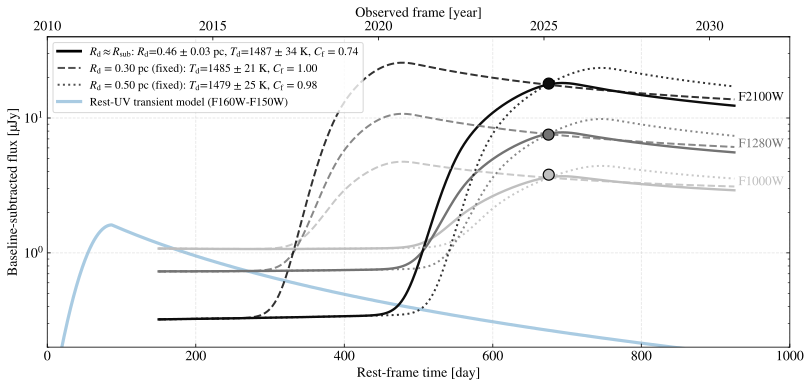
图注：对JWST/MIRI测光的尘埃回声建模。F1000W、F1280W和F2100W测光以紫外—光学瞬变的热尘埃再处理来描述。实线为假定特征尘埃半径等于升华半径Rd=Rsub的最佳模型。虚线与点线分别示例固定半径0.3和0.5 pc的解，展示尘埃几何与再处理效率不确定性造成的部分退化。半透明蓝线为静止系紫外F160W—F150W波段的最佳瞬变模型，与图3相同，用于示意紫外耀发后的延迟红外响应。未来密集中红外监测可打破退化，当前三条MIRI波段的谱形已能约束约1500 K的尘埃温度。
怎么看这张图：三波段是在单历元取得，曲线的滞后是模型预测，不是已实测的多历元回声。温度较稳健不表示半径和覆盖率同样独立确定。 展示重要物理解释及当前时域证据边界。
来源与置信度：arXiv HTML；source verified；https://arxiv.org/html/2609.30441v1/dust_echo_wide_uvmodel_v1.svg
3. Mass and spin properties of black-hole mergers reveal formation in triples
- 来源：arXiv / astro-ph.HE
- 链接：https://arxiv.org/abs/2609.30378
- 作者：Jakob Stegmann, Aleksandra Olejak
- 公告 / 来源日期：2026-09-28
- 阅读层级：相关简报
- 评分：novelty 8/10，importance 8/10，relevance 7/10，final 8.65/10
- 推荐理由：三体演化同时解释低质量峰、自旋倾角与质量比，具有联合预测；尚不能说明高质量尾部，需全文核查种群选择及模型权重。
中文题目：三体演化能解释部分黑洞并合种群，但尚未测定形成通道占比
问题、方法与结论：作者用COMPAS演化3.2亿个分层三体系统，再以长期平均三体动力学及后牛顿修正追踪黑洞并合。加上宇宙恒星形成、金属丰度和延迟时间权重后，在红移0.2处得到约10太阳质量的主质量峰、偏向等质量的质量比分布，以及偏正但有约38%负值的有效自旋分布，接近GWTC-5.0的PixelPop种群推断。
意义与贡献：第三颗星诱导内双星偏心率与轨道方向变化，为低质量并合同时出现较大自旋倾角提供统一路径。结果是若干边缘分布的相容性，不是通过完整竞争通道混合推断确认三体占主导。默认延迟切除下总率仅2.6—5.3 Gpc⁻³ yr⁻¹，低于观测总种群27.5—49.4的90%可信区间。
可借鉴之处：可借鉴把恒星演化、三体动力学和宇宙学权重分开，以及联合检查质量、自旋和10 Hz偏心率。模型预言短延迟的低质量偏心事件偏向自旋对齐，可作为未来判别；但默认剔除5 Myr以内并合后，e₁₀Hz>0.1的比例为零，保留短延迟才约3%。
局限与关注点：自旋大小从按观测选择的截断正态分布抽样，并非恒星演化自洽预言；三体摄动只在黑洞形成后启用，早期恒星合并用延迟阈值近似处理。长期平均在快速轨道演化时失效，高质量尾部仍需其他通道。质量转移和踢速变体虽大致稳定，不能取代这些结构假设的不确定度。
图2
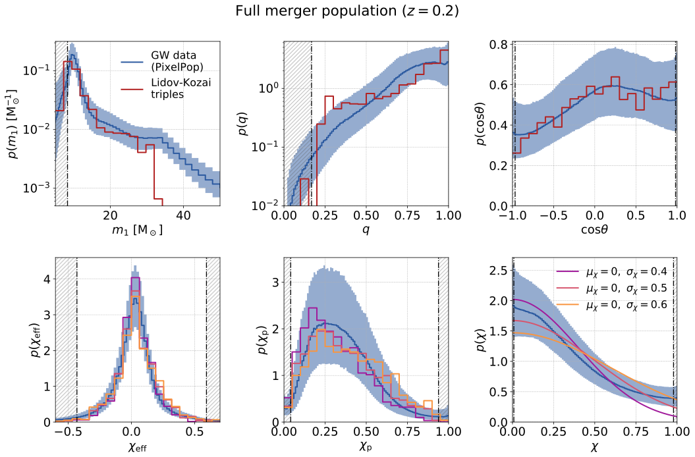
图注：层级三星形成的双黑洞并合性质与引力波数据推断的边缘分布比较，全部取并合红移z=0.2。蓝色实线为PixelPop模型从GWTC-5.0推断的并合率密度中位数，阴影为90%可信区间；斜线区域表示数据可能约束较弱的参数空间。底行假定两颗黑洞的自旋大小分别独立取自0到1之间的截断正态分布，其均值和标准差见图例。
怎么看这张图：先看质量峰和有效自旋负值尾，再注意底行的自旋幅度分布是选择的模型输入；形状相似并不等于这一通道已解释全部事件率。 支持简报核心结论及其适用边界的原文图
来源与置信度：arXiv HTML；source verified；https://arxiv.org/html/2609.30378v1/merger_distributions_6panel_JEANS_00.svg
4. Tracing the Host-Galaxy Environments of FRBs with a New Sample of Localized Sources Detected with the DSA-110
- 来源：arXiv / astro-ph.HE
- 链接：https://arxiv.org/abs/2609.30616
- 作者：Frank M. Verdi, Vikram Ravi, Myles B. Sherman, Jakob T. Faber, Stella Koch Ocker, Kritti Sharma, Casey J. Law, Gregg Hallinan
- 公告 / 来源日期：2026-09-28
- 阅读层级：相关简报
- 评分：novelty 8/10，importance 8/10，relevance 7/10，final 8.65/10
- 推荐理由：43个有红移FRB的宿主DM、RM及散射联合样本约束环境；磁星归因受宿主与传播退化限制。
中文题目：43个定位快速射电暴的传播效应指向致密、磁化的宿主环境
问题、方法与结论：作者把24个新分析的DSA-110快速射电暴与既有样本合并，得到43个有宿主光谱红移的事件，最远达红移1.33。通过对银河系盘、晕和星系际介质贡献的概率分布作卷积扣除，估计宿主静止系色散量（电子柱密度指标）与旋转量（磁化等离子体指标）；宿主色散量的对数正态拟合中位数约241 pc cm⁻³。合并样本的宿主色散量和旋转量存在相关（Spearman ρ=0.47，p=0.0009），支持二者常来自共同的磁化宿主介质。15例有显著脉冲展宽，其中5例还能测闪烁带宽。
意义与贡献：高宿主色散量及其较宽分布，比平滑星际介质模型更接近FIRE-2中年龄小于1000万年、仍处于电离氢区的年轻星族预测。这为年轻磁星通道提供群体证据，但不能从传播量唯一确定发动机，也不能排除少数延迟形成的源。
可借鉴之处：可借鉴的是把前景不确定性带入宿主量推断，并联合色散、法拉第旋转和散射检验环境。合并文献后的散射—宿主色散相关为ρ=0.52、p=0.003；与脉冲星经验关系比较前，须统一到宿主静止系1 GHz并作几何修正。用于宇宙学前，应重新评估常用50–100 pc cm⁻³宿主先验。
局限与关注点：DSA自身的散射相关只有p=0.2，不能称单独显著；32.768微秒时间分辨率与带宽限制偏向可测的强散射事件。两屏模型所得屏距上限较宽，不能细分宿主内部结构。FIRE-2比较仅有6个银河系质量星系；电离氢区磁场对照本身也有选择偏差，因此“支持年轻环境”强于“证明都在电离氢区”。
图7
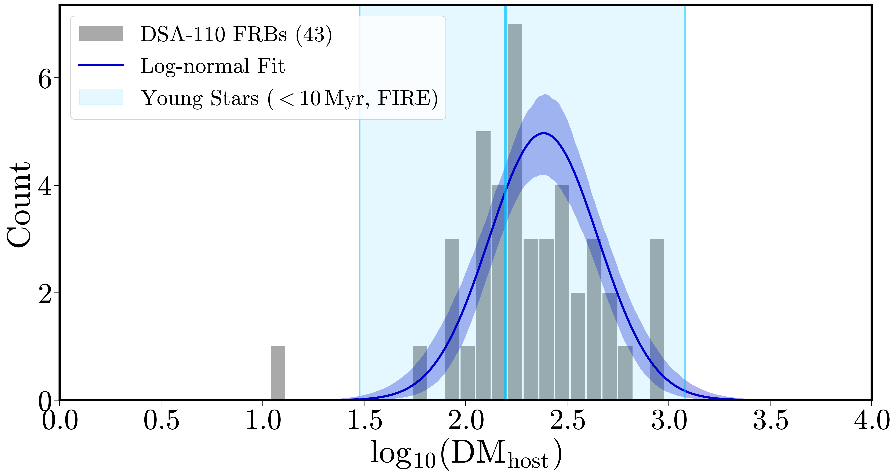
图注：DSA-110样本宿主色散量的对数分布及对数正态拟合。深蓝阴影表示拟合的68%可信区间。浅蓝区域为FIRE-2在红移0、对星系朝向平均后，对年轻恒星前身（年龄小于1000万年）FRB预言的90%范围；浅蓝竖线标记相应中位数。
怎么看这张图：观测分布较接近年轻环境模型，但蓝色区间的68%与90%口径不同。这里比较群体分布，没有把单个FRB直接定位到电离氢区。 支持简报核心结论及其适用边界的原文图
来源与置信度：arXiv HTML；source verified；https://arxiv.org/html/2609.30616v1/dm_distribution.png
5. Metastable Neutron Stars as Transient-Rate Detectors of Heavy Dark Matter
- 来源：arXiv / astro-ph.HE
- 链接：https://arxiv.org/abs/2609.30335
- 作者：Ziwen Yin, Hong-Yi Zhang
- 公告 / 来源日期：2026-09-28
- 阅读层级：相关简报
- 评分：novelty 8/10，importance 7/10，relevance 8/10，final 8.65/10
- 推荐理由：引入种群耗尽使暗物质触发率约束成为有限区间，概念新颖；中子星亚稳态及短GRB归因是假设。
中文题目：用中子星转化瞬变率约束暗物质：种群耗尽会留下双侧排除区
问题、方法与结论：作者假设部分中子星处于强一阶强子—夸克转变的亚稳态，暗物质局域沉积能量可触发转化。把单星触发率乘上尚未转化的存活比例后，当前瞬变率随相互作用强度先升后降：极弱触发事件太少，极强触发则早已耗尽老星。以校正喷流束射的短GRB总率2000 Gpc⁻³ yr⁻¹作上限，基准模型排除约7.2×10⁻¹¹至4.1×10⁻⁹ yr⁻¹的单星触发率。
意义与贡献：有价值的变化是由“某颗老中子星必为强子星”的难验证前提出发，转向种群事件率和存活的共同约束。双侧区间是一种可复用推断结构，不是暗物质或夸克星的观测发现，也不能把强相互作用端普遍称为不受约束。
可借鉴之处：该框架可比较暗物质湮灭、衰变、非弹性散射与宏观暗物质。补充材料检查恒定补充新星：基准上边界约移至5.0×10⁻⁹ yr⁻¹，快速触发极限仍低于采用的短GRB上限。可借鉴把不可逆转化、补充率与可观测事件效率同时写入种群模型。
局限与关注点：数值依赖亚稳比例1%、亚稳年龄1 Gyr、10 GeV成核阈值及每次转化产生可见短GRB的假设。附录明确能量转给集体成核自由度的效率约1只是最大耦合基准，需非平衡QCD计算；纯电磁簇射沉积尺度过大，不适用同一限制。宏观暗物质还需能到达星核且为光学厚几何散射体。
图1
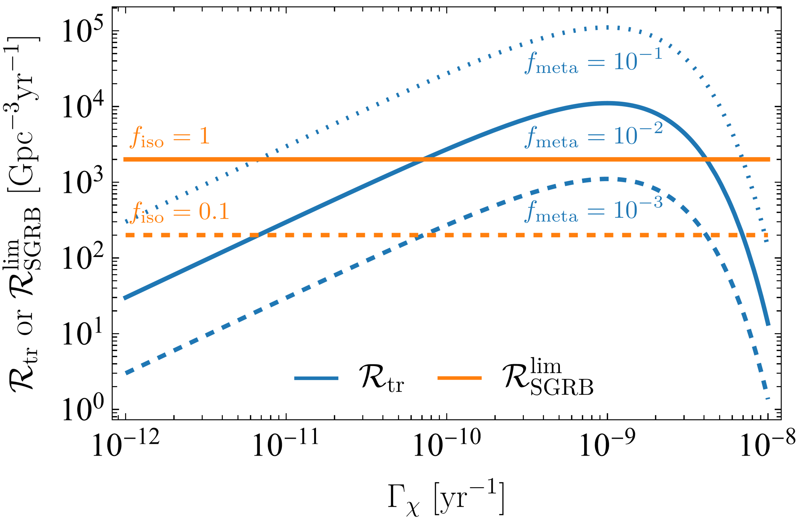
图注：相变事件率密度随每颗恒星触发率Γχ的变化。蓝线是式(3)的相变率预言，橙线是类短伽马暴暂现源给出的观测上限。实线对应本文基准参数；虚线和点线改变亚稳中子星比例及短伽马暴中来自未知孤立源的比例。基准模型排除中间的一段触发率，而足够慢和足够快的触发仍允许。
怎么看这张图：曲线先升后降是可被触发的亚稳星逐渐耗尽造成的。因此这不是简单的暗物质相互作用单侧上限；连续形成新星会改变快速分支。 支持简报核心结论及其适用边界的原文图
来源与置信度：arXiv HTML；source verified；https://arxiv.org/html/2609.30335v1/figs/transition_rate.png
6. SN Helios: A Multiply Imaged Type II Supernova Opening Time-Delay Cosmography beyond redshift of 3
- 来源：arXiv / astro-ph.HE
- 链接：https://arxiv.org/abs/2609.30440
- 作者：Seiji Fujimoto, Conor Larison, Justin D. R. Pierel, Lukas J. Furtak, Masamune Oguri, Adi Zitrin, Jose M. Diego, Keren Sharon
- 公告 / 来源日期：2026-09-28
- 阅读层级：相关简报
- 评分：novelty 8/10，importance 8/10，relevance 7/10，final 8.65/10
- 推荐理由：z3.34透镜II型超新星光谱确认及未来像预测具有观测价值；尚无时延H0测量，高红移污染结论需限定。
中文题目：SN Helios：红移3.34的II型超新星及未来透镜像预言
问题、方法与结论：JWST的VENUS巡天在星系团RXC J0018.5+1626后发现暂现源SN Helios；2024年底没有对应体，2026年7月与8月有成像及光谱。宽Hα发射和蓝移吸收组成的P-Cygni轮廓，连同Hβ、He I特征，确立富氢II型超新星解释：采用红移3.34，Hα本征半高全宽约7900 km/s。把本地模板按棱镜分辨率前向处理，并比较两历元测光，作者给出第二历元约在B波段峰后27.5±2.8个静止系日。五套透镜模型预言下一幅像在发现后约2–6年出现；目前没有测得重现像及实际时延。
意义与贡献：它为红移大于3的超新星时间延迟宇宙学提供可检验目标，也给极高红移星系筛选提供真实污染模板：同一暂现源在仅用星系模板时可被误判成红移约16的掉落源。高测光红移后验只在所选模板集合内成立，不能替代暂现性和光谱判别。
可借鉴之处：值得借鉴的是将比较光谱卷积到仪器随波长变化的分辨率，再测线形和阶段；以及用多历元差分排除静态星系解释。图6将实际测光除以基准放大率11.2、赋予假设巡天误差而不添加模拟噪声，直接展示模板不完备造成的误分类。
局限与关注点：透镜模型实际放大率范围约5.3–25.1，不能把摘要的10–20当完整系统误差；多重像光谱红移稀少使时延预言分散。B波段变暗0.90±0.58等本身精度有限，II型模板多样性也限制阶段误差。宿主M_UV约大于−13依赖放大率和平坦紫外谱假设；单个未检出宿主不足以确立超新星率增强。
图2
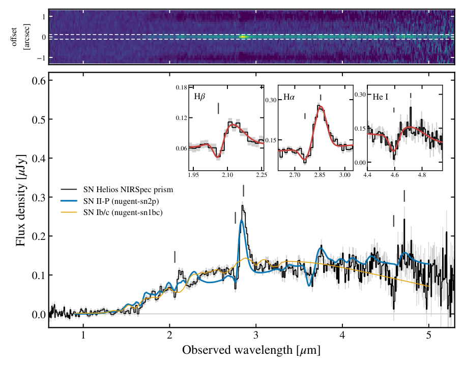
图注：SN Helios于2026年8月17日取得的JWST/NIRSpec S200A1棱镜光谱，曝光13.1 ks；黑色为光谱，灰色为1σ误差带。蓝色为最佳IIP型模板，橙色为对照的剥离包层Ib/c模板；两者都经过随波长变化的棱镜线展宽函数处理，阶段、宿主红化和振幅自由拟合。上面板为校正后的二维谱，虚线表示最优提取采用的空间轮廓半高全宽0.23角秒。插图放大Hβ、Hα及He I 10830埃特征；红线为线性连续谱加发射、吸收高斯的P-Cygni最佳拟合。富氢模板相对剥离包层和热核模板的χ²改善达数百，主要来自贫氢模板无法产生的宽Hα发射。
怎么看这张图：宽发射和蓝移吸收共同构成富氢膨胀光球证据。先确认谱线再讨论模板阶段；Δχ²是所比较模板的差异，不能直接读成某个统一的发现显著性。 支持简报核心结论及其适用边界的原文图
来源与置信度：arXiv HTML；source verified；https://arxiv.org/html/2609.30440v1/sn_helios_2d_viridis.png
7. Interaction of stellar dipole and disk magnetic fields in accretion-ejection systems
- 来源：arXiv / astro-ph.HE
- 链接：https://arxiv.org/abs/2609.30392
- 作者：Somayeh Sheikhnezami, Sarah Aslani
- 公告 / 来源日期：2026-09-28
- 阅读层级：相关简报
- 评分：novelty 7/10，importance 7/10，relevance 8/10，final 8.35/10
- 推荐理由：比较偶极场与盘大尺度磁场并测试内缺口，为供能到喷流提供可借鉴约束；限二维轴对称设定。
中文题目：盘磁场如何维持喷流：轴对称电阻磁流体模拟的条件性比较
问题、方法与结论：作者用PLUTO演化可磁扩散的次开普勒吸积盘，比较贯穿盘的大尺度极向磁场、预设恒星偶极场及二者叠加。主网格为256×256，薄盘厚径比0.1，磁扩散采用α=1.6处方。纯盘场参考解形成持续、准直的喷流，按内盘控制体测得流出与吸积质量通量比约26%；纯偶极场的角动量移除和吸积更弱。叠加场在盘场作用较强时接近参考解，偶极作用增强时出现更明显波动。参考解演化至20000个内盘动力学时间，其余主比较至5000。
意义与贡献：这组计算把磁场形态、角动量通量和供给喷流的吸积流联系起来，展示在所设边界下盘场有助维持长期外流。贡献是对具体吸积—喷出结构的系统比较，并非首次提出磁离心盘风，也不证明所有天体的盘场都比恒星磁层重要。
可借鉴之处：方法价值在于用相同控制体同时量化质量及物质运动、磁应力携带的角动量通量，而不只比较形态图。附录增加内盘间隙和替换内边界，检查定性结论是否依赖内区处理；这套诊断适合供能—环境—外流链条的模型审查。
局限与关注点：模拟是二维轴对称，没有恒星自转与自洽导电恒星边界，因此不能判定旋转磁层或推进器机制的效率。两类场的径向衰减及拓扑并不相同；最极端Case 7还把盘场减弱1000倍，不是仅改变偶极强度的单参数实验。26%是该模型和控制体的结果，不能直接用作X射线双星或活动星系核的普适喷流效率。
图10
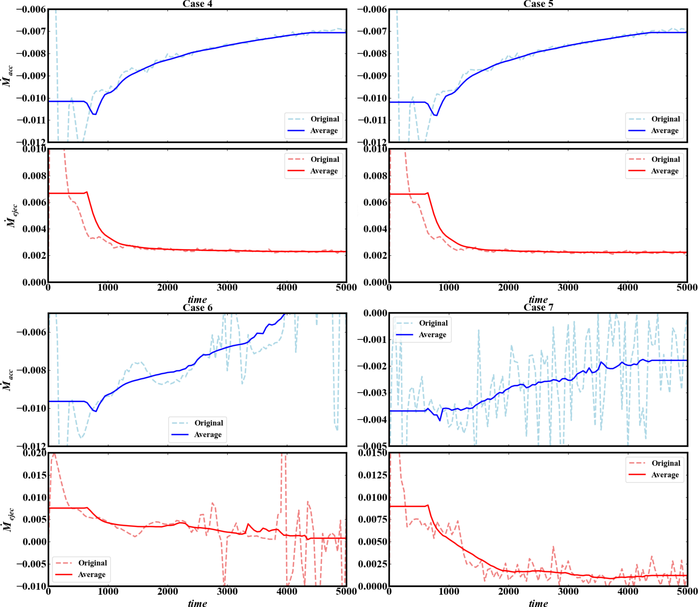
图注：同时叠加盘极向磁场与恒星偶极磁场的Case 4至Case 7（见表1）中，吸积质量通量与流出质量通量的演化。
怎么看这张图：盘场保持较强时通量较平稳，极端偶极主导设置下更弱且波动。Case 7还减小盘场，读图时不能把所有变化单独归因于偶极增强。 支持简报核心结论及其适用边界的原文图
来源与置信度：arXiv HTML；source verified；https://arxiv.org/html/2609.30392v1/fig10.png
8. A statistical hardness classification of ultraluminous X-ray sources using long-term Swift/XRT monitoring
- 来源：arXiv / astro-ph.HE
- 链接：https://arxiv.org/abs/2609.31324
- 作者：Sinan Allak, Wei Yu, Menglei Zhou, Honghui Liu, Andrea Santangelo
- 公告 / 来源日期：2026-09-28
- 阅读层级：相关简报
- 评分：novelty 7/10，importance 7/10，relevance 8/10，final 8.35/10
- 推荐理由：29个ULX硬度分类及低计数、下采样稳健性给出可复用长期描述量；观测计数分类不能当作内禀状态。
中文题目：29个超亮X射线源的长期硬度分类：可复用的观测描述量
问题、方法与结论：作者统一处理29个超亮X射线源的3500余次Swift/XRT档案观测，以1.5–10 keV与0.3–1.5 keV计数率之比定义硬度。只有误差范围完整落在硬度1的一侧才标为硬或软；跨越指标CI则统计移除不确定观测后，相邻有效标签改变的比例。规则得到8个软主导、5个硬主导、16个混合源。以软硬比例和CI作层次聚类也偏好三组，29次留一检验中25次保留三组，但两种方法共用描述量，并非独立物理验证。
意义与贡献：这为稀疏、低计数的长期监测提供统一比较办法。四个已有轨道或超轨道调制报道的源都在规则的混合组中，可作为后续目标筛选线索；本研究没有发现新的显著长周期，亦未确立硬度组别与中子星、黑洞类型的一一对应。
可借鉴之处：最有用的检验是把吸收幂律谱折叠进XRT响应：仅改变吸收柱或光子指数就能跨越硬度边界，揭示观测分类与本征谱态的差别。低计数源NGC 925 ULX-3用泊松源—背景后验重算后，CI由56.3%降至38.5%，但仍属混合组，说明标签大类与数值精度应分别检验。
局限与关注点：CI没有时间间隔项，删去不确定点后相邻的两次观测可能相隔很久，不能解释成跃迁频率或周期。样本监测密度不均且排除了单能段仅有上限的观测；随机抽稀四源不能涵盖实际观测选择。吸收、风遮挡和连续谱变化仍退化，物理解释需独立光谱及逐源相位分析。
图8
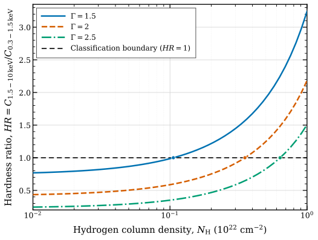
图注：经过Swift/XRT响应折叠的吸收幂律模型硬度比随吸收柱密度的变化，光子指数分别为1.5、2.0、2.5。使用代表性的XRT光子计数模式响应计算0.3–1.5及1.5–10 keV计数率。水平虚线为采用的硬度1边界，彩色圆点表示各模型越过该边界时的吸收柱密度。
怎么看这张图：同样的硬度分类边界随连续谱斜率和吸收改变。这张图说明为何观测分组不等于本征谱态；它是响应模拟，不是这些源的吸收拟合结果。 支持简报核心结论及其适用边界的原文图
来源与置信度：arXiv HTML；source verified；https://arxiv.org/html/2609.31324v1/NH_HR_sensitivity.svg
9. A Multidimensional General-Relativistic Boltzmann Solver for Neutrino Transport: Implementation, Discretization and Optimization
- 来源：arXiv / astro-ph.HE
- 链接：https://arxiv.org/abs/2609.31611
- 作者：Arthur Offermans, Harry Ho-Yin Ng, Patrick Chi-Kit Cheong, Anthony Mezzacappa, Tjonnie Guang Feng Li
- 公告 / 来源日期：2026-09-28
- 阅读层级：相关简报
- 评分：novelty 7/10，importance 8/10，relevance 7/10，final 8.35/10
- 推荐理由：六维GR玻尔兹曼离散及隐式求解提速有明确数值价值，主要是实现验证，不能将300倍特定基准推广。
中文题目：Gmunu中微子Boltzmann输运：以碰撞核低秩结构降低计算代价
问题、方法与结论：作者将广义相对论磁流体代码Gmunu扩展到位置与动量共六维相空间，以有限体积法演化中微子分布。动量在流体共动系离散，碰撞核作一阶勒让德展开；利用角向核的低秩结构，把昂贵隐式求解从全部角度、能量和种类变量降到较小系统，再恢复分布。在核心反弹后约20毫秒的一维超新星快照、16个能量格和14个角格下，包含能量及种类耦合的单次隐式步骤较全矩阵LU法快约300倍。
意义与贡献：直接保留角分布有助检查只演化低阶矩、依赖闭合关系的M1输运。本文提供一条降低高维成本的实际路线，而非声称无近似地解决全部中微子动力学；碰撞核仍截断在一阶，六维输运的总开销和时间步限制仍大。
可借鉴之处：低秩分解针对碰撞核，不等于把最终粒子分布也截断成M1。作者用守恒、曲率传播、辐射球及超新星比较分别检验：简化静态测试中M1与Boltzmann的自由传播光度相差约10%，平均能量更一致；改变闭合关系的试验支持闭合误差解释，但尚未完全排除离散误差。
局限与关注点：数值格式只在空的平直时空、均匀分布等条件下保证特定离散一致性，尚未同时保证粒子数和四动量守恒。分布越出0–1时裁剪还会破坏粒子数守恒。约1%能量误差是20能量格的特定一维激波测试结果；300倍不是整场模拟加速，10%也不是所有真实超新星的M1偏差，需在动态多维计算中重新收敛验证。
图11
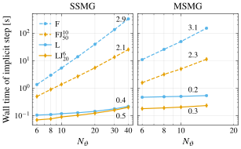
图注：隐式步骤总计算时间随角格数Nθ的变化，比较全方法F和低秩方法L。左为单种类、多能群的能量耦合SSMG模式，右为多种类、多能群的种类和能量耦合MSMG模式。FJ及LJ表示在F、L中用Jacobi法求解Newton–Raphson迭代，标注收敛容差tol和最大迭代次数it_max。各曲线旁给出近似斜率，表征复杂度；F和FJ大致符合理论。L的理论复杂度O(NaNe+Ne³)在此由Ne³项主导，LJ对应Ne²项，因此对角格数呈次线性；随着Na继续增加，L及LJ的斜率预期趋近1。
怎么看这张图：右图的约300倍比较针对14个角格、固定快照中的一次隐式步。角格数更大仍受平流时间步和总内存限制，不能由此宣布真实三维超新星计算快300倍。 支持简报核心结论及其适用边界的原文图
来源与置信度：arXiv HTML；source verified；https://arxiv.org/html/2609.31611v1/computation_time.svg
10. Set Transformer inference of the neutron star equation of state from stellar observations
- 来源：arXiv / astro-ph.HE
- 链接：https://arxiv.org/abs/2609.31081
- 作者：Márcio Ferreira, Valéria Carvalho, Michał Bejger, Constança Providência
- 公告 / 来源日期：2026-09-28
- 阅读层级：相关简报
- 评分：novelty 7/10，importance 7/10，relevance 7/10，final 8.00/10
- 推荐理由：集合Transformer适应变长NS观测并给密度敏感性诊断，方法可借鉴但训练先验与模拟校准决定解释范围。
中文题目：集合Transformer重建中子星状态方程：模拟校准与可辨识范围
问题、方法与结论：作者用不依赖输入顺序的集合Transformer，把数量可变的中子星质量—半径或质量—潮汐形变模拟观测，映射为20个密度点的压强或声速平方及预测误差。训练每组含5–35次同类观测；联合输入实际含两类各N次、共2N个元素，通常对应不同恒星。压强用分段多方状态方程训练，声速用独立高斯过程族训练，各有独立测试划分。半径误差0.2 km时，加潮汐数据使稳定星可达密度内的平均压强误差从6.7%降至5.4%。
意义与贡献：它将无序观测集合、变长输入和逐密度误差结合，提供快速反演工具。测试集约95–97%的密度点落在名义2σ区间内，但这是模拟族内的逐点覆盖，不是现实数据的整条状态方程同时置信带，也不是新测得的致密物质约束。
可借鉴之处：灵敏度导数可检查哪些恒星信息影响哪些密度，区分稳定星可达区域和依赖先验的高密度外推。用致密度代替质量后，训练族的中心密度散布减小。值得借鉴的是同时展示物理可达区误差与全网格误差，避免把先验预测当观测信息。
局限与关注点：两种状态方程族分别训练、分别测试，不是同一网络跨族迁移验证。每种配置只训练一次，没有训练随机性误差；模拟没有纳入真实质量测量误差和完整观测后验。联合输入带来更多测量，比较样本效率须按总元素数核对。声速灵敏度的波纹来自高斯过程先验相关尺度，不能解释成相变发现。
图2
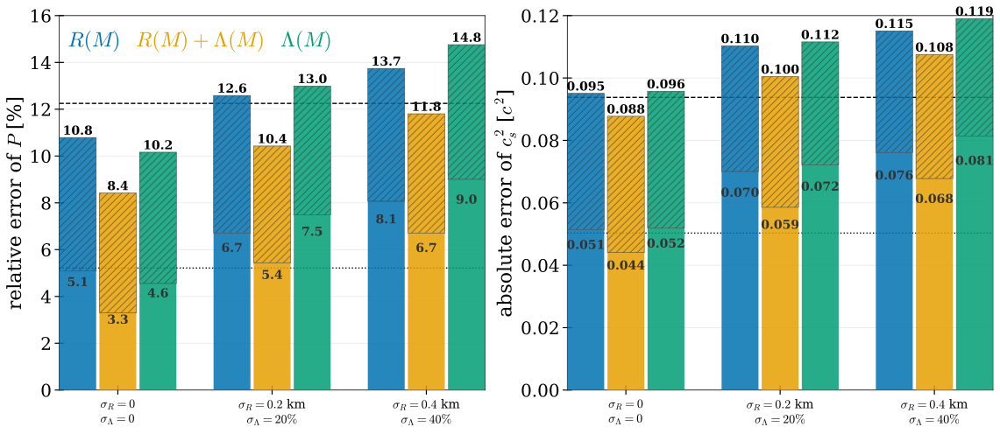
图注：十种模型配置在测试集上的精度，R-MSE基线以水平线表示。左为4030个分段多方测试状态方程的平均相对压强误差（百分数），每个状态方程使用一组含5–35颗随机恒星的观测；右为7798个高斯过程测试状态方程的声速平方平均绝对误差。蓝、橙、绿柱分别对应质量—半径、联合半径和潮汐形变、仅潮汐形变输入；横轴给出各噪声情景的半径及潮汐误差。总柱高覆盖密度不超过1.10 fm⁻³的完整网格，实心部分限于各状态方程的稳定星最大中心密度，斜线部分是超过该密度的额外外推误差。虚线为不含误差输出头、使用均方误差训练的半径基线在全网格上的误差，点线为其物理可达区域误差。
怎么看这张图：先比较实心与斜线部分，再比较输入模式。橙色联合输入每类各N次，共2N个元素；不能只凭橙柱较低就声称在相同总测量成本下提高相同比例。 支持简报核心结论及其适用边界的原文图
来源与置信度：arXiv HTML；source verified；https://arxiv.org/html/2609.31081v1/fig2.svg
11. Probing the cosmic web with fast radio bursts: II. Scintillation
- 来源：arXiv / astro-ph.HE
- 链接：https://arxiv.org/abs/2609.31106
- 作者：Sharon Lapiner, Nir Mandelker, Paz Beniamini, S. Peng Oh
- 公告 / 来源日期：2026-09-28
- 阅读层级：相关简报
- 评分：novelty 7/10，importance 7/10，relevance 7/10，final 8.00/10
- 推荐理由：银河闪烁抑制探测宇宙网冷云给出红移和填充率条件预测；尚无新云团探测。
中文题目：用银河系闪烁的减弱探测宇宙网冷云：一组待检验预言
问题、方法与结论：作者把热介质中冷云碎裂模型与多屏衍射散射相连：前景星系晕或宇宙网先把快速射电暴的表观像展宽，随后银河系等离子体产生的频谱闪烁便可能被抹平。模型以约万度、与环境压强平衡的小云为基准，采用Kolmogorov湍流并估计视线相遇概率。示例中，源红移0.5、途经约10¹²太阳质量星系晕，冷云体积填充率10⁻⁴、10⁻³、10⁻²分别可使银河系闪烁在约0.9、1.3、2 GHz以下减弱；这些数值还固定了银河屏的距离、带宽和穿越几何。
意义与贡献：间接观察已知银河屏的闪烁变化，有望探测脉冲展宽不易分离的稀薄前景结构。贡献是把云尺度、湍流和覆盖概率转成频率相关的群体预言；现有有闪烁测量的样本多在低红移，论文没有用数据确认冷云存在或测出填充率。
可借鉴之处：可检验信号是跨频段的闪烁恢复：在模型转折频率之上调制接近正常、之下减弱。联合银河脉冲星屏模型、前景星系红移和FRB定位，比单次“未见闪烁”更有辨识力。图7进一步预测抑制比例随平均星系际色散量变化，适合未来群体样本验证。
局限与关注点：冷云大小、非热压强和湍流耗散尺度均改变预言；晕与丝状体还可产生相近信号。仪器频率分辨率、银河屏带宽误估及弱闪烁也会导致未检出。宿主屏通常影响小是所设几何下的结果，不能无条件排除；DM到红移的均值换算忽略逐视线散布，尤其需结合本期DSA研究对较大宿主DM的提示。
图7
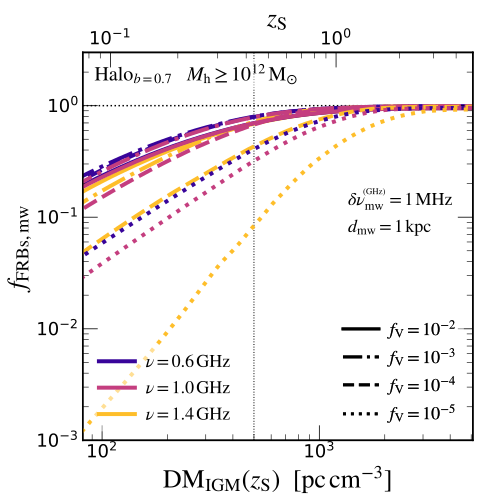
图注：质量不低于10¹²太阳质量的星系晕抑制银河系闪烁的FRB比例（纵轴）。为便于与未来未定位样本比较，下横轴用平均星系际色散量表示，上横轴是源红移。假设视线以无量纲冲量参数b=0.7穿过星系晕，银河屏距离1 kpc，1 GHz处闪烁带宽1 MHz。颜色代表观测频率，线型代表晕内冷云的体积填充率。例如填充率不低于10⁻⁴时，模型预言额外色散量不低于500 pc cm⁻³的FRB中，约40%以上会在约1.4 GHz以下出现银河系闪烁抑制。
怎么看这张图：这是条件性预测曲线，不是测得的抑制比例。横轴使用平均星系际DM，不能把未扣宿主的观测总DM直接代入；需要跨频带检测效率和前景屏信息。 支持简报核心结论及其适用边界的原文图
来源与置信度：arXiv HTML；source verified；https://arxiv.org/html/2609.31106v1/f_frbs_mw_suppression_Halo.svg
说明
评分由 LLM 给出初评，再由本地阈值策略过滤；IACT、TeV 伽马射线和高能中微子天文学按重点方向处理。